The gateway already feels like a product. What it lacks is a single voice.
Every App's promise is a simple, professional portal: people open the private apps their organization deployed, and the gateway only gives apps what you allow. Walked end to end on a seeded local gateway (owner, admin, member; light and dark; 1440 and 390 wide; the Cloudflare Access ring through its mock), the frames hold up: one shell, one card, one table, one dialog, calm spacing, nothing broken. What breaks the spell is voice. The same product says workspace in the sidebar and organization everywhere else, gives three dates three formats, hands a member a CLI command, colours five idle states four ways, and lets a few engineering strings (api-token:0123…, tools on /mcp as dataforseo_<tool>, re-reads the Worker) through to screens a non-developer owns. Every one of those is a Saturday fix.
The terminal is the other half of the product, and it is the more finished half.
Everything the owner does before the first sign-in happens here: setup, deploy, status, secret, access. Captured from the real CLI in this checkout (help and the logged-out states), from the real status and deploy renderers driven by the CLI's own fake Cloudflare account (the test harness), and, for setup, from the fake everyapp the setup-skills harness uses, since a live setup needs a Cloudflare account.
Deploy and run Every App apps on your own Cloudflare account.
USAGE
pnpm everyapp <command> [flags]
BUILD AN APP
create Create a new app from the starter template
dev Run the app locally behind a dev Gateway
deploy Deploy the app in this directory
release Pack the app in this directory as a release others can install
db Migrate, query and restore an app's D1 database
RUN A GATEWAY
login Log in to Cloudflare
setup Install or repair the Gateway
update Update the Gateway to this checkout (after git pull)
install Install an app someone published, from GitHub or a release file
status Show the Gateway, its apps and anything to fix
delete Remove an app from the Gateway
access Put Cloudflare Access in front of the Gateway and its apps, or take it off
secret Set, remove and list secrets and Gateway settings
provider Offer a data provider (DataForSEO) to members' AI clients as an app, with the Gateway's key
email Manage the addresses an app sends as and receives at
teardown Delete everything Every App created in a dedicated test Cloudflare account
FLAGS
-h, --help Show help for everyapp or a command
-v, --version Show everyapp's version
--no-color Print without colors (also NO_COLOR=1)
EXAMPLES
$ pnpm everyapp setup --domain apps.example.com
$ pnpm everyapp create todo
$ pnpm everyapp deploy
$ pnpm everyapp install https://github.com/<owner>/<repo>
Run pnpm everyapp <command> --help for a command's flags.
exit 0
Two groups in the order a person meets them, each command in one plain sentence, and the three examples at the bottom are the three things a new owner actually types.
The dim first line, Rebuilt the everyapp CLI from this checkout (1b424eac), is a build log, not help; it appears before every command while publishing is paused. teardown sits beside setup with no hint that it is for a test account only.
Nothing. This is the cleanest screen in the product.
→ Log in to Cloudflare with pnpm everyapp login Unattended? Set CLOUDFLARE_API_TOKEN and CLOUDFLARE_ACCOUNT_ID instead. Run: pnpm everyapp status exit 2
status, secret list and access show before login.One glyph, one imperative, one unattended alternative, and the exact command to run again. The arrow glyph means "your move", distinct from the red cross of an error.
Run: pnpm everyapp status repeats the command the person just typed; it earns its place only in --json where an agent needs data.rerun.
Nothing.
Node 24.20.0, cf 1.0.0-beta.14 ✓ Logged in to Cloudflare as pat@example.com ✓ Setting up Every App in Example Co ✓ Account is on Workers Paid ✓ Apps will live one level below apps.example.com ✓ Built the Gateway 0.2.0 from this checkout. ✓ Database created ✓ Uploaded ✓ The Gateway (0.2.0 (built from this checkout)) is live at https://apps.example.com ✓ → Open this link to create the owner account https://apps.example.com/setup#token=est_fake_1 → Open the setup link above to create the owner account Run: pnpm everyapp setup exit 2
Every step is a past-tense fact with a tick, and the run ends on the one thing only a person can do: open the link.
The link is printed twice: once as the action and once as the rerun's reminder (Open the setup link above…). The Gateway (0.2.0 (built from this checkout)) nests parentheses.
The fake's rendering is the harness's, not the CLI's; the real setup prints progress lines with timings. Verify the real run's final block reads as cleanly as deploy's before Monday.
Deploying todo to example.com (Acme) Installed dependencies ✓ Built ✓ Database created ✓ 1 migration Uploaded ✓ Added to the Gateway ✓ Live https://todo.example.com Who can open Private to owners and admins · change it at https://example.com/admin/apps The Gateway has no owner yet; its first owner gets the app (pnpm everyapp setup). ! Can't check the schema against the migrations: drizzle-kit isn't installed Fix: add drizzle-kit to devDependencies
Live and Who can open are the two facts a deployer wants, in that order, with the place to change access. The second deploy (not shown) drops to one line, Live https://todo.example.com.
(Acme) after the domain names the organization in a place where the person has not met that word yet. The dim indented sentence about the missing owner belongs to status, not to every first deploy.
Label widths change between runs (Live padded to the longest label present), so the summary block looks different on a first deploy, a redeploy and a deploy with public routes.
Deploying todo to example.com (Acme) Installed dependencies ✓ Built ✓ Database up to date ✓ Uploaded ✓ Live https://todo.example.com Public Open to the internet without sign-in: GET /hooks/*, POST /collect ! Can't check the schema against the migrations: drizzle-kit isn't installed Fix: add drizzle-kit to devDependencies
Open to the internet without sign-in: GET /hooks/*, POST /collect is the one security fact a deployer must not miss, said in words.
Nothing.
This is the only CLI summary line that carries a security consequence and it is drawn in the same weight as Live; a yellow glyph, as warnings have, would make it register.
Gateway https://example.com · self-hosted Cloudflare Acme Owner none yet Access off · pnpm everyapp access on puts Cloudflare Access in front (recommended) Release 0.2.0 TLS ready on 3 hostnames APP STATUS URL DEPLOYED BY PUBLIC crm ! needs setup https://crm.example.com dev@example.com todo ✓ live https://todo.example.com dev@example.com APP SETTING WHERE STATUS crm OPENROUTER_API_KEY Gateway ! not set crm CONTEXT_API_KEY Gateway not set (optional) crm TOKEN_ENCRYPTION_KEY crm ! not set ! No owner yet, so nobody can sign in Apps still deploy. Setup prints a one-time link that creates the owner account. Run: pnpm everyapp setup ! crm needs setup OpenRouter: Drafts replies. Get it at https://openrouter.ai/settings/keys Guide: .claude/skills/everyapp/setup/openrouter.md TOKEN_ENCRYPTION_KEY Run: pnpm everyapp secret set OPENROUTER_API_KEY TOKEN_ENCRYPTION_KEY --app crm
The settings table answers "what does this app need and have I set it" in one glance; the problem block repeats the why, the vendor page, the guide file and the command. This is the same model the gateway's setup dialog shows, and the two agree.
Guide: .claude/skills/everyapp/setup/openrouter.md is a path for an agent in a block addressed to a person. The PUBLIC column is empty for every app here and still takes a header.
Access off · pnpm everyapp access on puts Cloudflare Access in front (recommended) is the only fact line with an opinion; it reads as a nag on every run. The yellow ! is used for both "needs setup" and "no owner yet", which are different severities.
SETTING WHERE STATUS OPENROUTER_API_KEY Gateway ✓ set DATAFORSEO_API_KEY Gateway ! not set CONTEXT_API_KEY Gateway not set (optional) exit 0
Three columns, three states (set, not set, not set optional), nothing else.
Nothing.
WHERE Gateway for every row here; the column only earns itself when an app-held secret is in the list.
Cloudflare Access is off for apps.example.com. exit 0
One sentence.
Nothing.
It says what is, not what access on would do, which is what the help text promises ("and what access on would change").
The first screens are clean but silent about what the owner just became
This is the owner's first minute: the one-time link printed by everyapp setup opens /setup, the person creates the owner account, and lands on an empty All apps page. Look at three things: what the form tells you about what you are creating (nothing beyond the button label), what the sidebar then calls your organization ("Ben Owner", the same string as the account block below it), and whether the one card on the empty page gets you to a first app on a desktop and on a phone. The forms themselves are tidy and match the sign-in family; the gaps are copy and one naming decision.
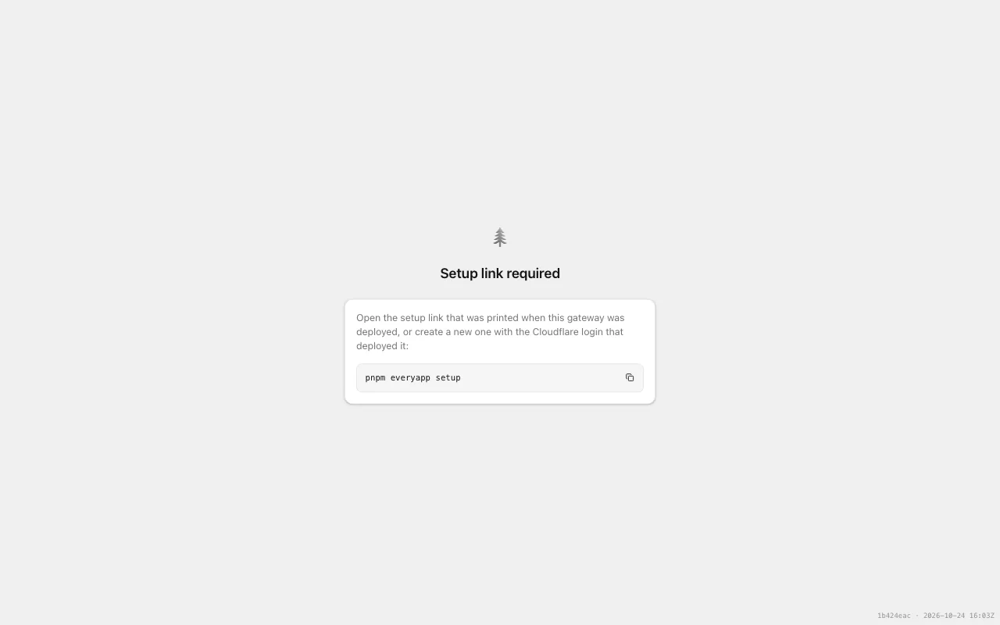
pnpm everyapp setup; no sign-in link; build stamp bottom right.One sentence, one command with a copy button, the wider md card for the longer text; it names both ways out (the printed link, or pnpm everyapp setup with the Cloudflare login that deployed it).
Nothing.
No footer: the sign-in page and the "Gateway already set up" state both offer "Sign in", this one strands anyone who arrives already set up or with the URL fragment stripped. The build stamp "1b424eac · 2026-10-24 16:03Z" sits on a signed-out page.

Same AuthCard family as sign-in (logo, title, one card, metallic full-width button); four fields, nothing to decide, and the graphite button is unmistakably primary here.
The subtitle "Create the owner account for this gateway." restates the button label; that line should say something the button cannot.
Nothing names which gateway this is (no hostname), nothing says the link works once, and nothing says what an owner can do or that an organization will be created, so the first screen explains less than the terminal that printed the link.
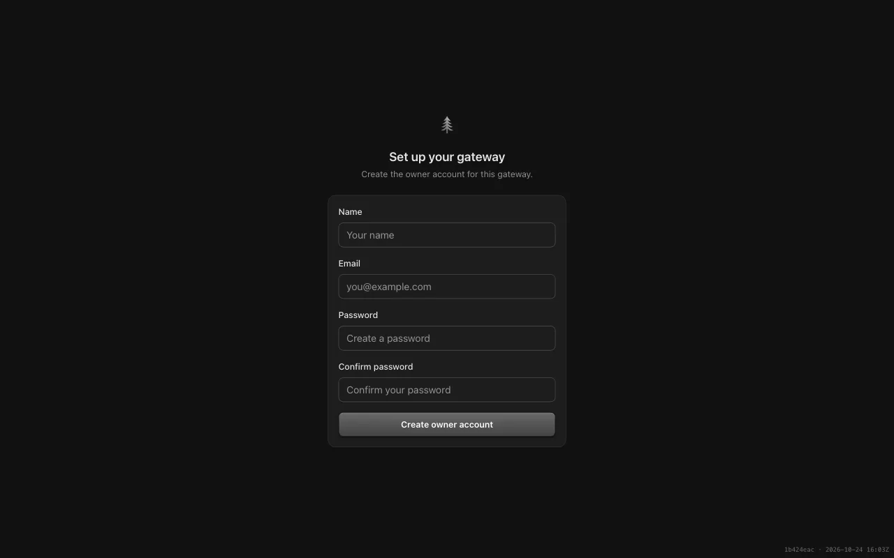
Labels, inputs and the card border hold contrast, and the hierarchy logo, title, card matches the light version and the sign-in page.
Nothing.
The submit is a light grey gradient with dark text on a near-black card; against the light shot's graphite button it reads as the secondary action, on the one form where the primary action matters most (TODO's "dark mode's metallic primary button" item).
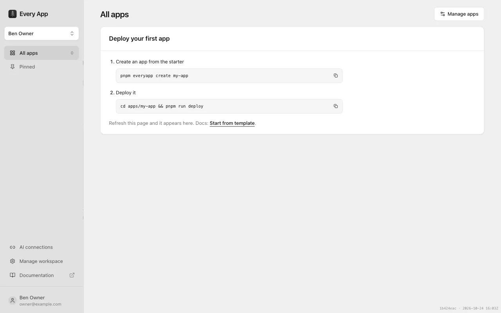
One card, two numbered commands with copy buttons, and the plain line "Refresh this page and it appears here." The sidebar is identical to the populated home (home-grid-owner-light-1440), so nothing moves when the first app arrives.
The outlined "Manage apps" button: with zero apps it opens an empty table, and it sits in the same viewport as the sidebar's "Manage workspace" for the same destination under a different name.
The switcher reads "Ben Owner" at the top of the sidebar and the account block reads "Ben Owner" at the bottom; where the grid shows "Acme Corp" this shows a person, which a new owner reads as a bug. Step 1 says pnpm everyapp create my-app, step 2 pnpm run deploy: two spellings of the CLI in one card with no sentence reconciling them.
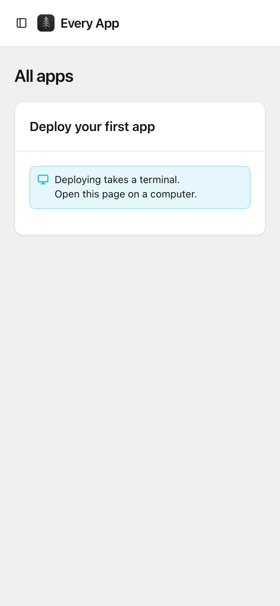
The honest line "Deploying takes a terminal. Open this page on a computer." is the right call on a phone, and the card keeps its desktop title so the two layouts read as one component.
Nothing.
The phone variant drops "Docs: Start from template" along with the commands, so an owner on a phone has nothing to read or forward (the lane note says the commands stack here; the shot shows they do not, and OnboardingBanner.tsx hides both with hidden sm:block).
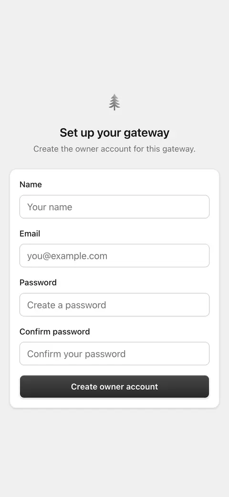
Sign-in is clean but anonymous, and three pages promise what they can't deliver
This is the front door: the sign-in form and the dead ends around it (invitation, sign-up, forgot and reset password, verify email, a consumed setup link, an unknown URL). Look at three things: whether a stranger can tell whose door this is, whether every promise on these pages is one the gateway can keep, and whether the dead ends share one shape. The form itself is fine; the problems are in what the pages say and leave unsaid.

A conventional two-field sign-in with one dark primary; anyone who has signed in anywhere can do it here without reading.
'Don't have an account? Sign up' invites a click that /sign-up refuses with 'Invitation required'.
No product or organization name anywhere: a grey tree and 'Sign in'. The signed-in shell introduces itself as 'Every App' with a dark-tile icon and 'Acme Corp'; the first screen a member sees does neither.
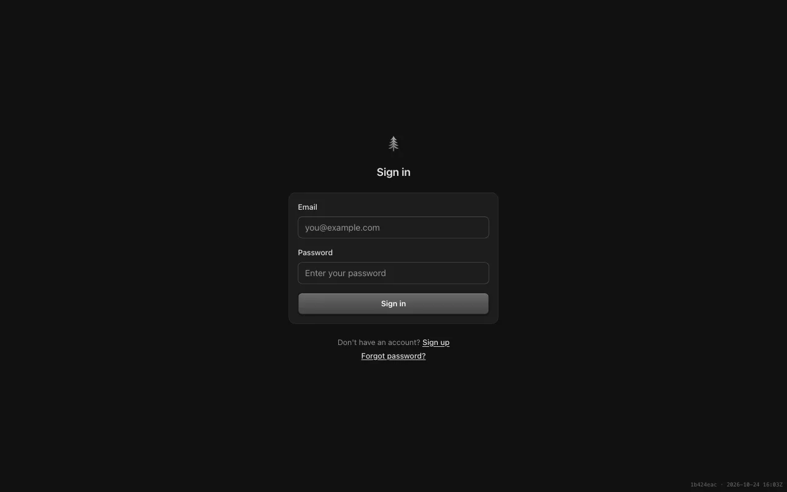
Inputs, labels and links keep their contrast and the card separates from the page.
Nothing.
The primary 'Sign in' is a light-grey gradient that reads as disabled against the near-black card, while the in-app dark primary ('Invite user' on Manage workspace) is a flat mid-grey; the tree logo nearly vanishes.
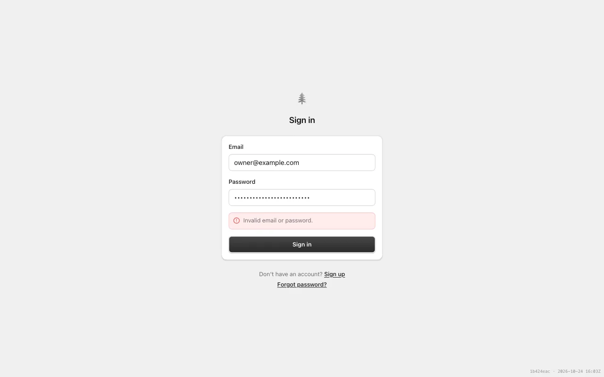
One inline alert with an icon between the fields and the button, values preserved, no toast, no shake; the best error state in the flow.
Nothing.
Nothing.
Short heading, one instruction, two buttons; nothing to misread.
'Use the email address that was invited.' asks the person to remember an address the page already knows and could print.
No organization name, no inviter, no invited address: a first touch with the product that could belong to any product. Inside, the shell says 'Every App' and 'Acme Corp'; here it is a grey tree.
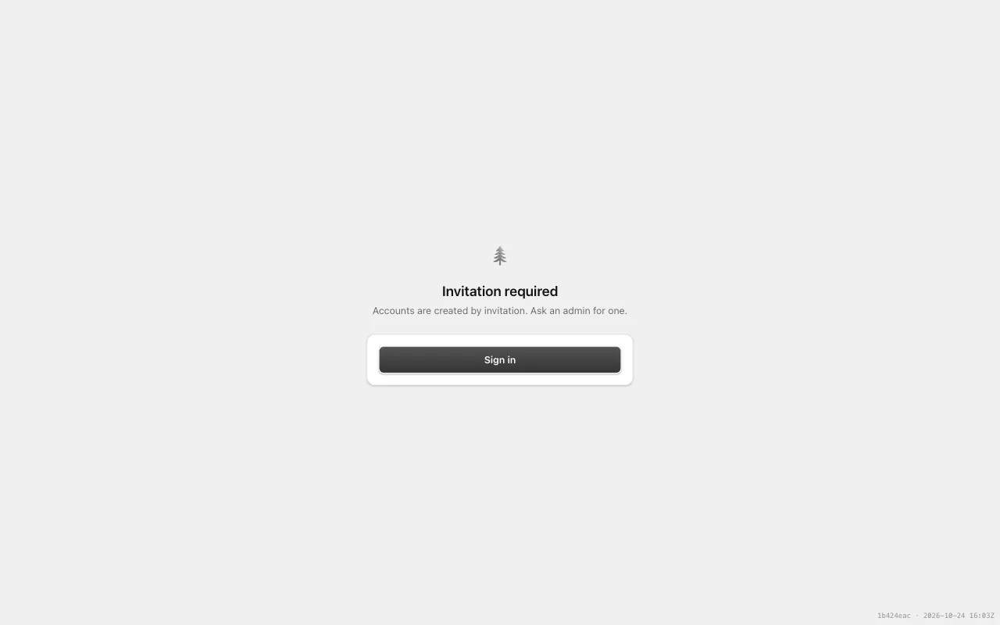
'Accounts are created by invitation. Ask an admin for one.' is honest and tells the person what to do next.
The card itself: a white panel around one button is furniture with no form to hold.
The page exists only because sign-in links to it; a link that leads to a refusal makes the product look unfinished in a member's first minute.
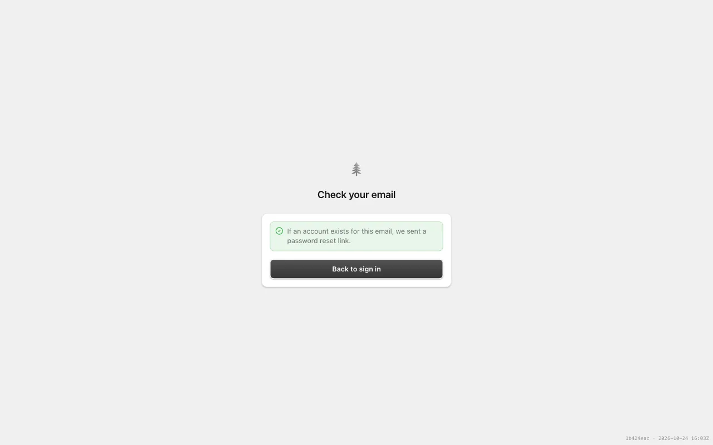
'If an account exists for this email' does not confirm whether the address is registered, and one button leads back.
'Check your email' as the heading plus a green success box saying the same thing is two confirmations for one event.
This gateway cannot send email (the admin Users tab says so in a banner) yet the page says it did; the green tint is also the only green anywhere in the sign-in family.
Short, right, and the next action is the primary button.
'Ask for a new one.' under the heading and 'Request a new reset link' on the button say the same thing; make the subtitle the reason instead ('That link expired or was replaced.').
A single dark button inside a white card reads as a form someone forgot to fill in; the verify-email page handles the same situation with an email field instead.
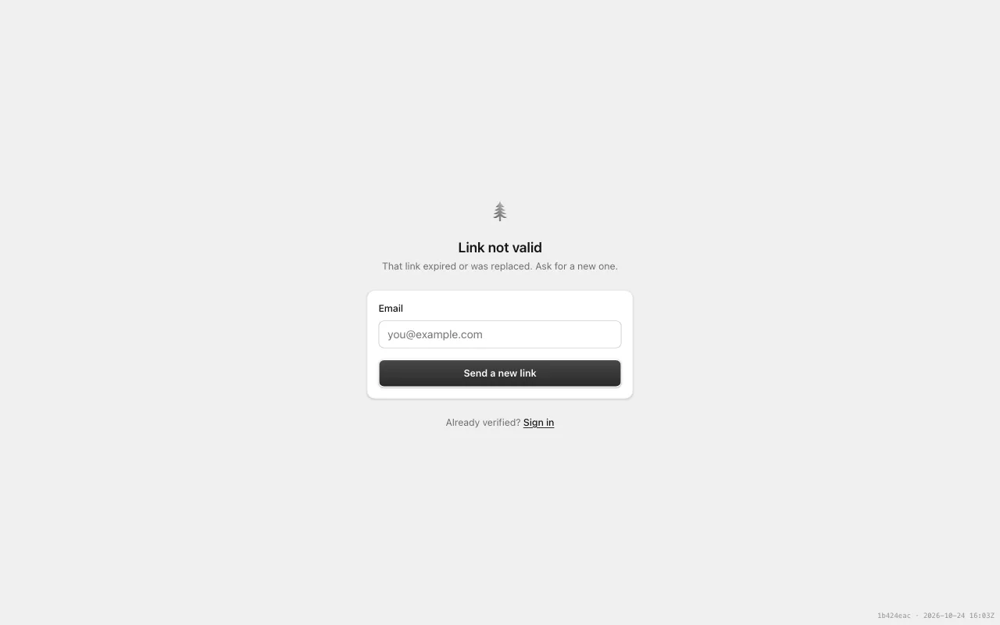
The reason is stated ('That link expired or was replaced.') and the recovery is on the same card; the best of the three bad-link pages.
'Ask for a new one.' is followed by a form that does exactly that; the sentence is redundant.
Three bad-link pages, three vocabularies: 'Link not valid' with a form here, 'Reset link not valid' with a button, and 'Invitation link not valid' only after sign-in.
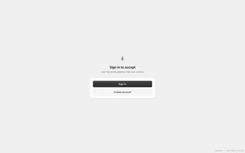
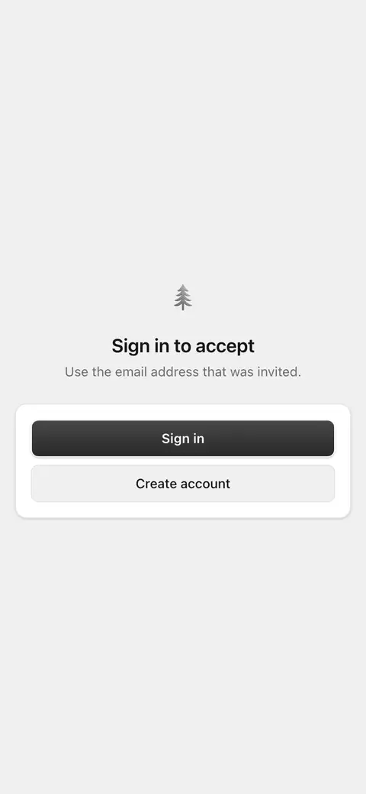
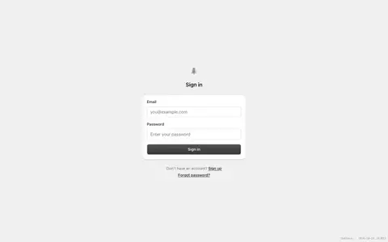
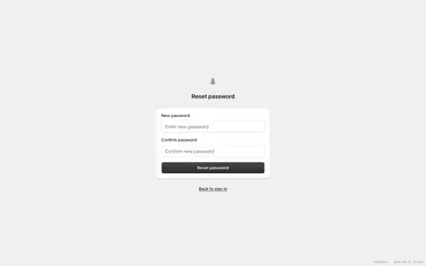
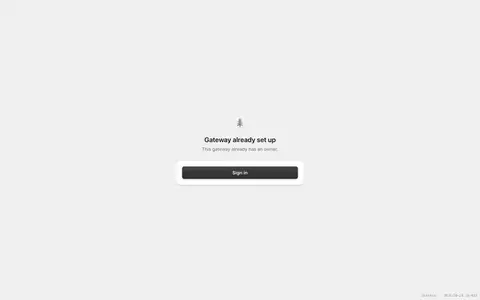

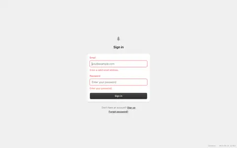
Behind Access, sign-in is invisible when it works and doubled when it fails
This is the outer ring: Cloudflare Access asks who you are before the gateway renders anything, and when the ring's identity matches an account the person never sees a gateway form at all. Look at the one screen the gateway does own here, /sign-in with the blue "Cloudflare Access says you're…" alert, and at what happens when the identity is unknown or mismatched: each failure stacks a second alert, keeps offering the SSO button and a Sign up link that dead-ends, and Sign out drops people onto Cloudflare's page. Six of the ten shots are the gateway's; the other four are the mock and carry no verdict.

It proves the order of things: the outer ring asks who you are before the gateway renders a single element of its own, which is the product's promise made visible.
Nothing.
Nothing of the product's is on it (default HTML, "Cloudflare Access (mock)", "Mock Cloudflare Access for local testing."). In production this screen is Cloudflare-branded and the gateway has no say in it, so the first thing a new member sees is not Every App.
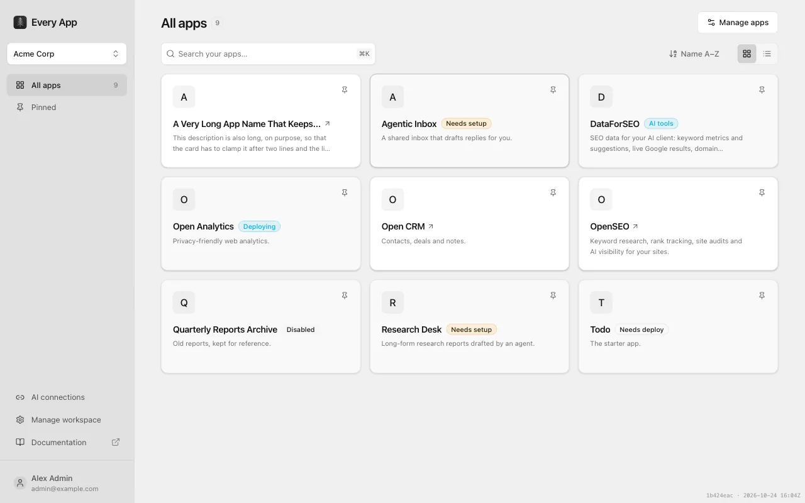
The happy path is silent and correct: the ring vouched, the gateway signed Alex in, and the launcher is identical to the owner's grid on gateway A (same nine cards, same chips, "All apps 9").
Nothing.
Nothing visually. The one thing to know: the account block ("Alex Admin / admin@example.com") gives no hint the session came through Access, so the Sign out in that menu will end the Access session too without warning.
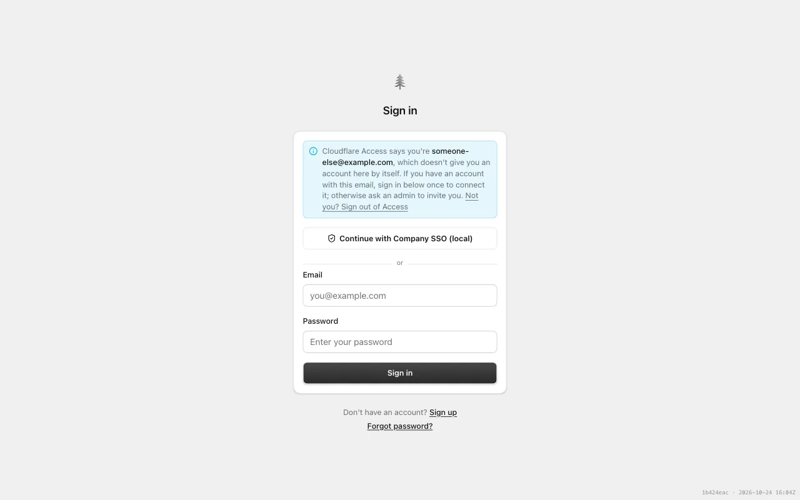
The blue alert is the best copy in the sign-in family: it names who Access thinks you are, says that alone gives no account, offers the one-time connect, and ends with a real escape, "Not you? Sign out of Access". Tint, icon and padding match the amber banner family on Admin.
"Continue with Company SSO (local)" for someone Access has already identified is circular, and "Don't have an account? Sign up" points at an invitation-required page. The bare "or" gives an existing account no hint which path to take.
The bold email breaks mid-address ("someone-" / "else@example.com") at the alert's roughly 280 px text width; an identifier should never wrap. Check that the production provider label is the company's SSO name without the "(local)" suffix.
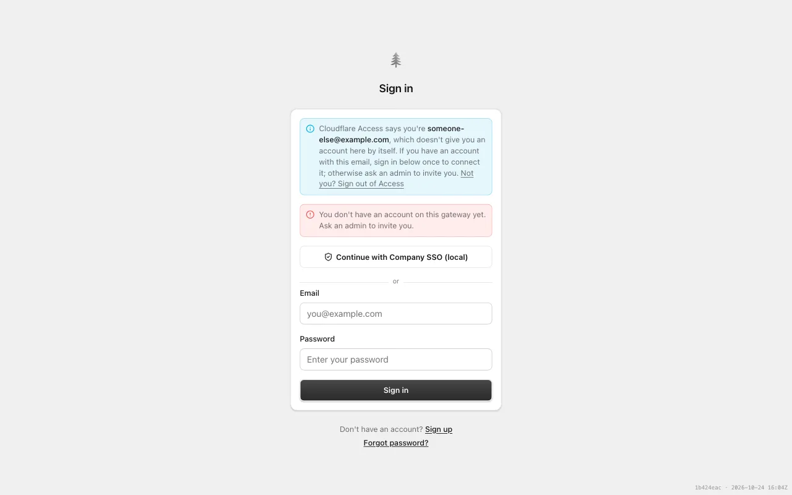
The red sentence is the one a stranger needs, "You don't have an account on this gateway yet. Ask an admin to invite you.", short and above the form where the eye lands.
The blue alert already ends with "otherwise ask an admin to invite you", so the card says it twice within 150 px; and "Continue with Company SSO (local)" is offered again, inviting a repeat of the step that just failed.
"Don't have an account? Sign up" under a card that just said you have no account leads to the invitation-required page (sign-up.tsx falls through to InvitationRequired), a dead end on the exact screen that provokes the click.
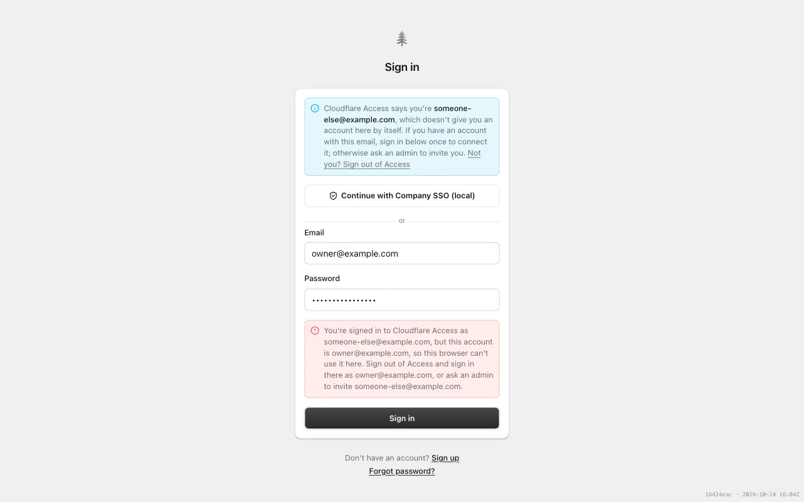
The red alert's advice is exact: it names both addresses and gives the two ways out (sign out of Access and back in as owner@, or get someone-else@ invited). The email field keeps its value so the person sees what they typed.
The blue info alert is now dead weight: it told the person to "sign in below once to connect it", they did, and the red alert supersedes it. Two 140 px alerts in one card is one too many.
The card reaches about 810 px so "Forgot password?" sits 40 px above the build stamp, and the red alert leaves both addresses plain while the blue alert bolds the Access email, so the same identifier is styled two ways in one card.
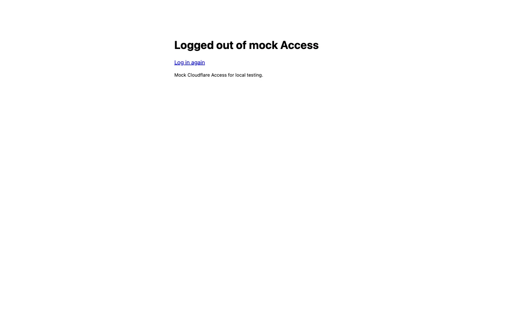
One click ends both sessions, which is the only sane behavior behind the ring: Sidebar.tsx's handleSignOut redirects to ACCESS_SIGN_OUT_PATH precisely because a gateway-only sign-out would be undone on the next load.
Nothing.
The person lands outside the product on a page the gateway does not own, with "Log in again" as the only way back, and the menu item they clicked just said "Sign out". In production that page is Cloudflare's, so the last screen a member sees is not Every App.
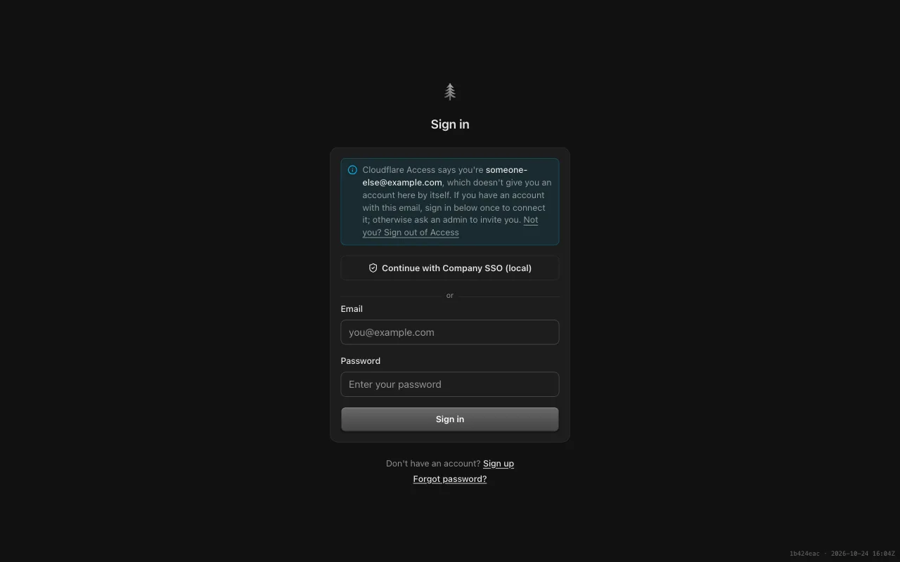
The info alert keeps its blue tint and the bold email reads well on the dark card; the outlined SSO button keeps its border and the inputs keep their placeholders legible.
Same as light: a blue alert, an SSO button, an "or", a password form and a Sign up link for a person who may need only one of them.
The metallic "Sign in" renders as a light grey slab (the known dark-mode item) and now carries about the same weight as the outlined SSO button above it, so the hierarchy between the two actions flips between themes.
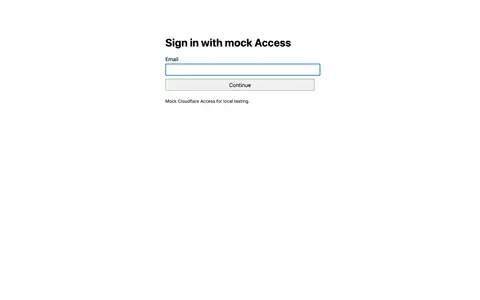
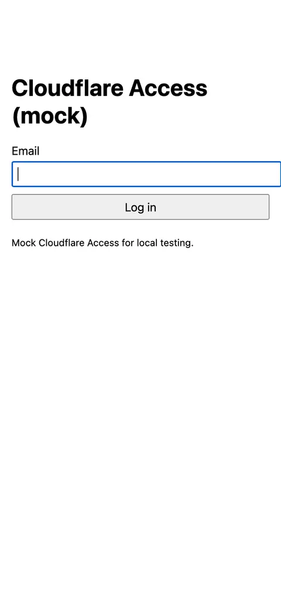
The library is calm and legible; its status language and inert cards aren't.
This is the first screen every member, admin and owner sees after sign-in: the organization's apps as cards or rows, with search, pinning and the organization switcher in the sidebar. Look at three things: the four cards out of nine that look openable and do nothing on click, the frame right after an organization switch where the sidebar and the table disagree, and the three words the sidebar uses for one organization ("Switch organization", "Manage organizations", "Manage workspace").
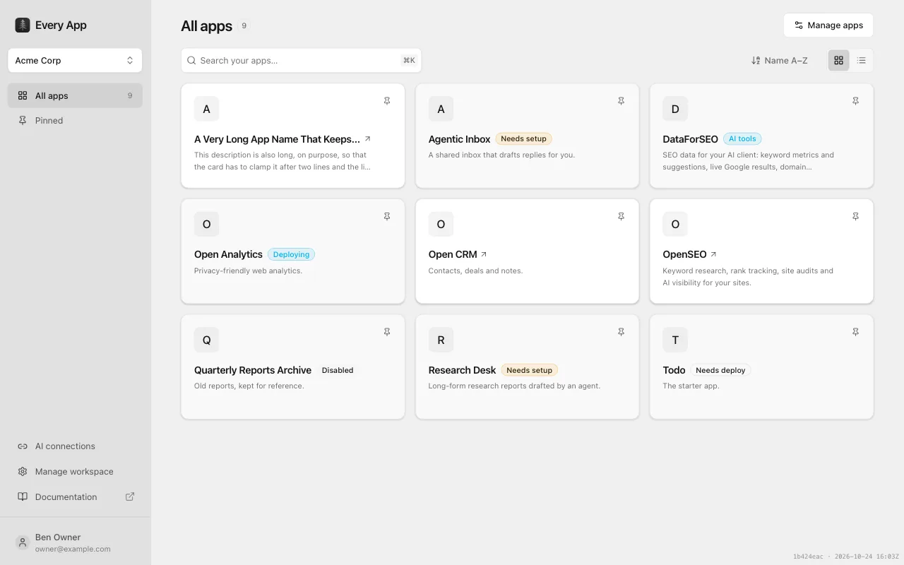
Calm and spacious, and consistent with the Admin pages: same sidebar, card radius and type scale. The count chip and the ↗ glyph are quiet and correct.
"Name A–Z" earns little on a nine-card grid; its only alternative is "Pinned first".
Letter avatars on all nine cards make a real library look like placeholders; "AI tools" and "Deploying" share one blue though one is a kind and one is transient.
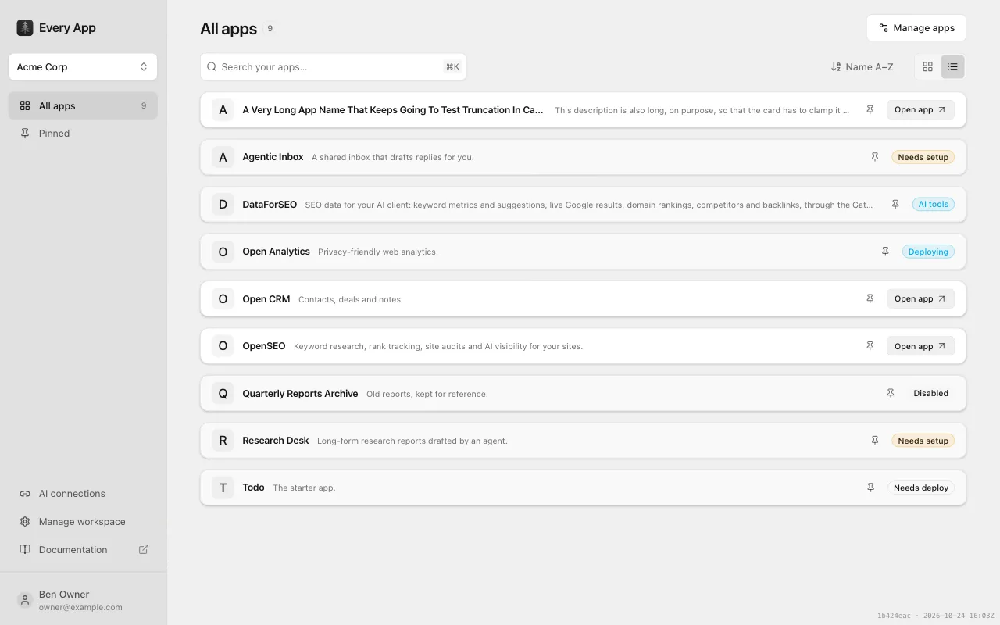
Rows are compact and aligned; the long name finally has room ("…Truncation In Ca…") and descriptions read as one line.
The pin icon sits in its own column between description and action; it could appear on hover.
The right column mixes an action button with status chips, and the chips use three different greys: filled "Disabled", outlined "Needs deploy", amber "Needs setup".

Nothing to praise; the shot proves the click did nothing.
Nothing.
A card styled exactly like the openable ones does nothing on click, and the only clue is a blue chip nobody explains. Same for Deploying, Disabled and Needs deploy: four inert cards of nine.
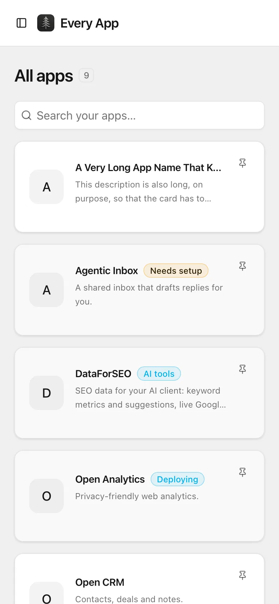
Cards stack legibly; name, chip and description all survive, and the search box goes full width.
The ⌘K hint is correctly dropped.
Each card is 128px tall with a blank lower third and an avatar floating at mid-height; "Manage apps" disappears with nothing in view replacing it.
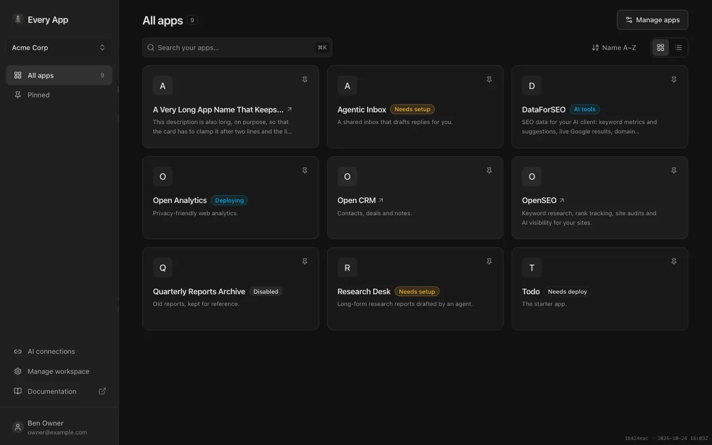
Chips keep their tints and stay legible; borders separate the cards; nothing breaks.
Nothing.
The build stamp bottom-right is barely legible, and the pressed grid toggle is only a shade lighter than the list toggle beside it.
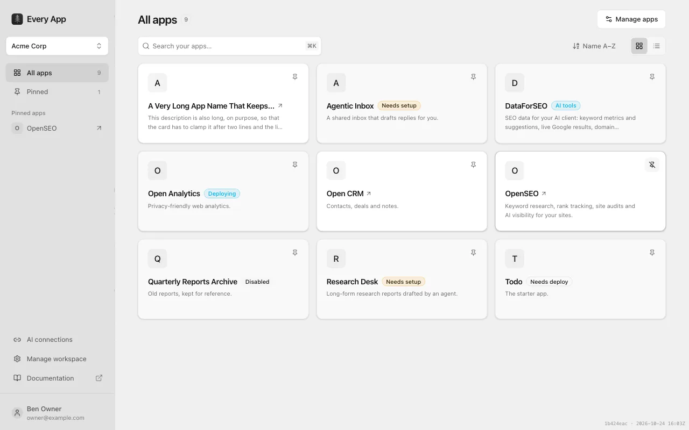
Pinning is instant with no confirmation, and the filled pin is a clear toggle state.
OpenSEO is now reachable from three places on one screen: its card, the Pinned filter and the Pinned apps list.
Nothing.
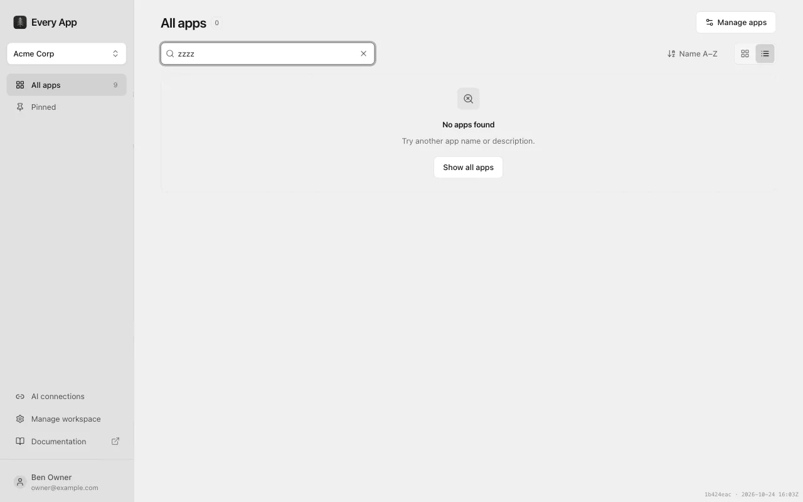
The search box gets a clear (×) and a strong focus ring; the recovery copy is specific.
Sort and the view toggle stay enabled with nothing to sort.
The heading says 0 while the sidebar says 9 on the same screen.
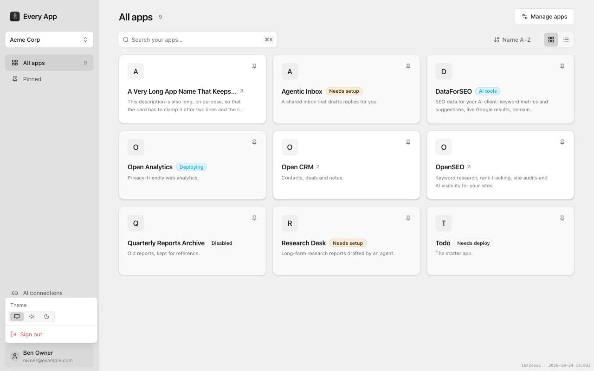
The menu is small and instant: two things, no scrolling. The segmented control reads as a real radio with one pressed segment.
Nothing.
"Sign out" is destructive red for an action that destroys nothing, and the popover's top edge clips the bottom of the "AI connections" row. The three theme icons carry no visible label; you learn which is which by pressing them.
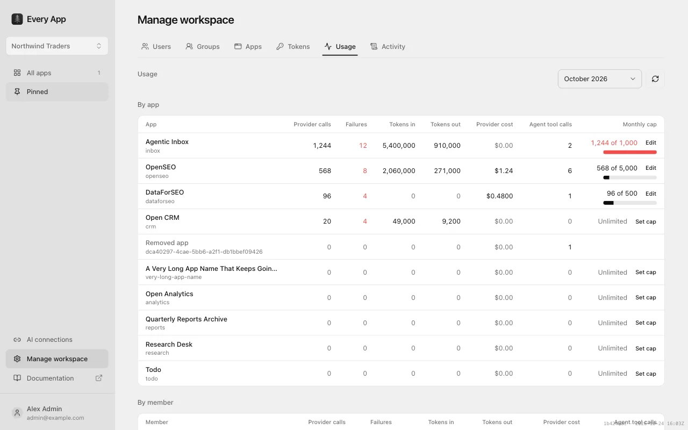
The switcher disables itself while the switch completes.
Nothing.
Sidebar and content disagree about which organization you are in, with no spinner or "Switching…" in the main area; for a product that promises "only what you allow", this is the wrong frame to show.
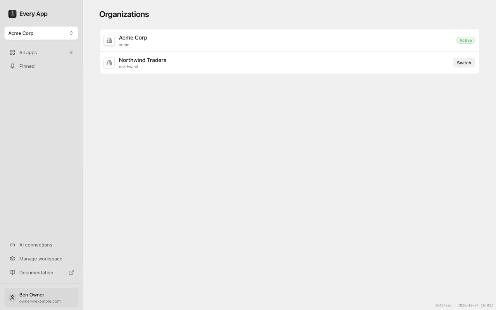
Fine; consistent card and row styling.
The whole page, given that "Manage organizations" manages nothing.
The green "Active" chip; "Current", neutral, says what it means.
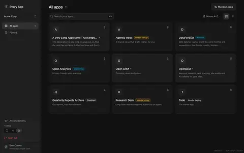

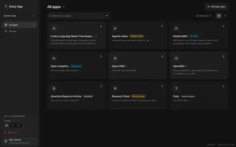
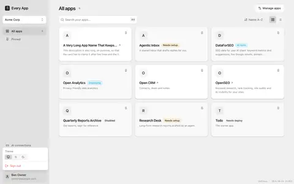
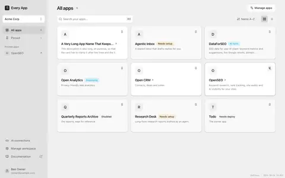
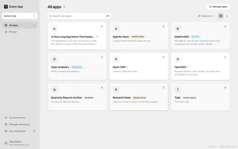
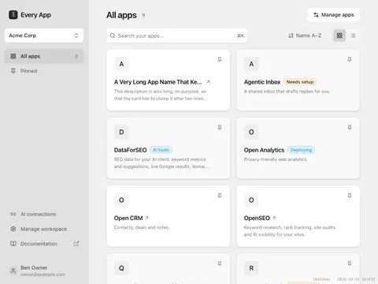
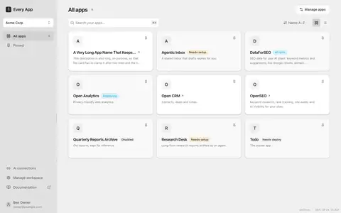
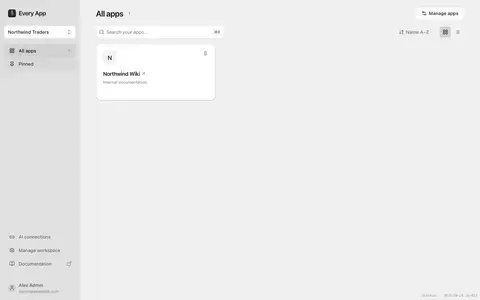
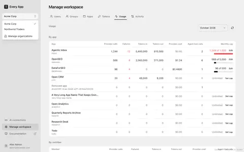
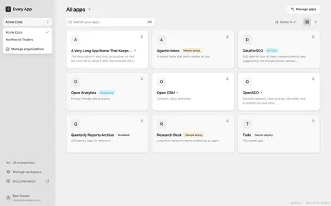
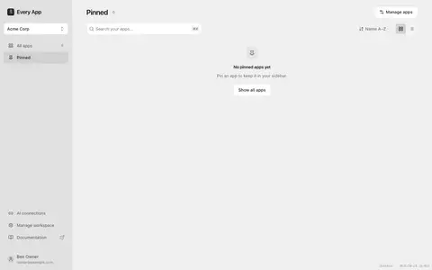
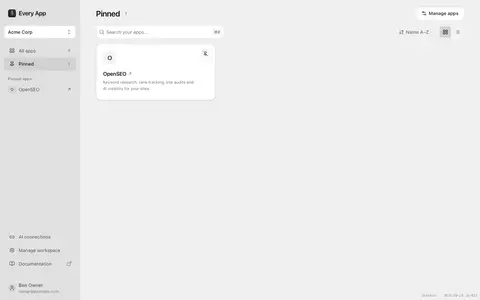
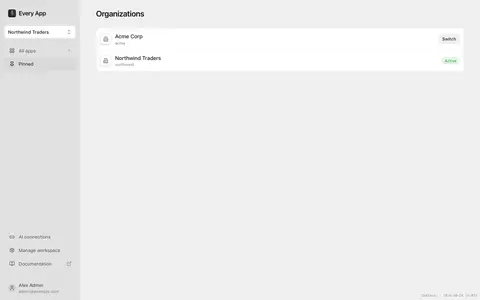
The setup dialog is honest and terse, but it ends at a terminal command.
This is the gate: an app your organization deployed that can't open yet, and the dialog that says what it needs, who sets it and how. Look at the three voices (owner and admin get a command, a member gets "Ask an admin to run:"), then at what the dialog gives you to do: in every state the only verbs are copy and Close, and the one email instruction it gives is incomplete.

This is the dialog at its best: title, one line of intent, the secret, the why, the command, done. It matches the launcher's restraint.
Nothing.
The only action is copy-then-Close. Nothing says 'run it, then reload' or offers 'Check again'; the footer answers a different question, in CLI terms.
Owner and admin get the same dialog, which is right: both can run the command.
Nothing beyond the admin shot.
Same mixed labelling and missing why for Workers AI; the optional rows carry no command while the required one does, and no line says what 'optional' costs you.

Gateway-held settings read as human names first ('Email', 'Slack') with the variable names small and mono after; that order is right.
Nothing.
The 'Get it at api.slack.com/apps' link opens with a blue focus rectangle, so the first thing lit up is a vendor site, not the command. And 'EMAIL_FROM' alone is not a sender the gateway will use; it also needs EMAIL_FROM_NAME (TODO.md lines 622 and 641 record this).

The intro and the 'Ask an admin to run:' heading tell a member the truth in one breath: not yours to fix, here is what to forward.
Raw setting names (EMAIL_FROM, SLACK_CLIENT_ID SLACK_CLIENT_SECRET) and a copy button for a member who has no terminal to paste into.
The most prominent interactive element is 'Get it at api.slack.com/apps', addressed to the one person in the room who is not meant to get anything.
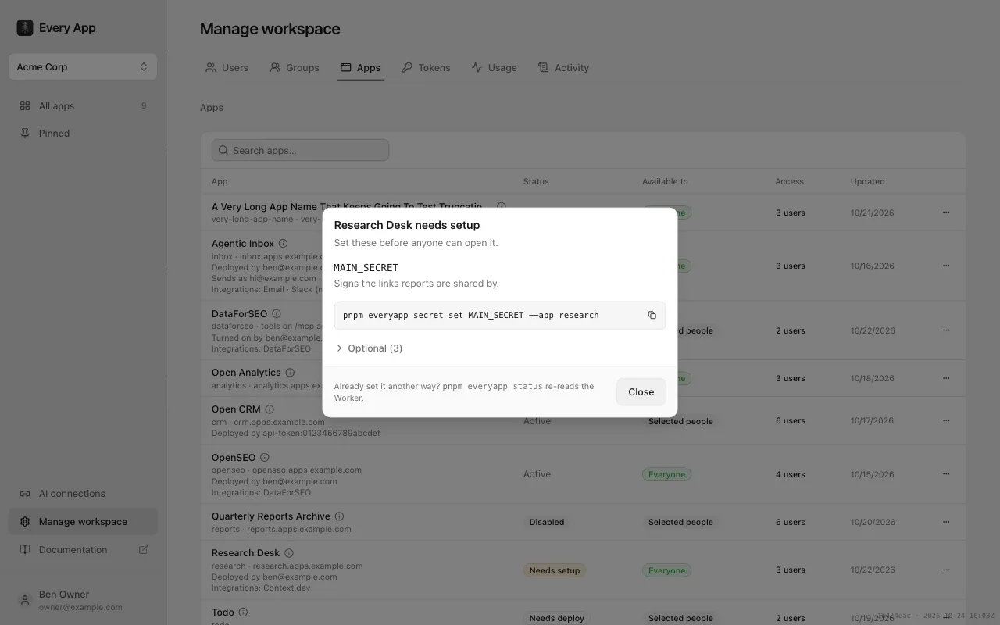
An admin gets the identical answer here and on the launcher: MAIN_SECRET, its why, one command, 'Optional (3)', Close. One dialog, two doors.
Nothing.
The 'Needs setup' chip is the only chip in the Status column that does anything, and it looks exactly like 'Needs deploy' two rows down, which is inert; no underline, chevron or row-menu item says so.
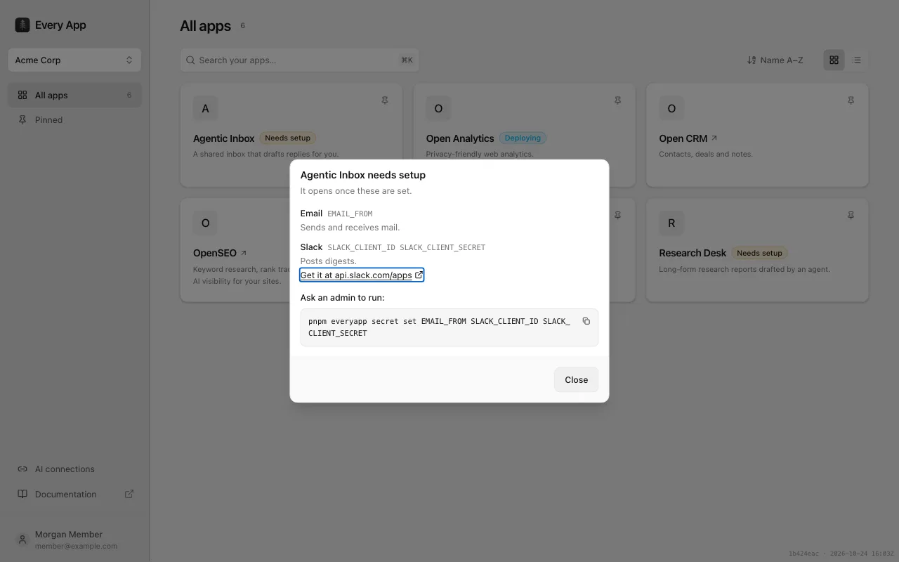
The bounce lands somewhere sensible: the launcher, with the right dialog open and no stale URL left behind.
Nothing.
Nothing says why the dialog is open. A member who typed inbox.apps.example.com sees exactly the card-click dialog (focus ring on the Slack link included); there is no 'You tried to open Agentic Inbox' line, and Close leaves the card at 'Needs setup' with nowhere to go.
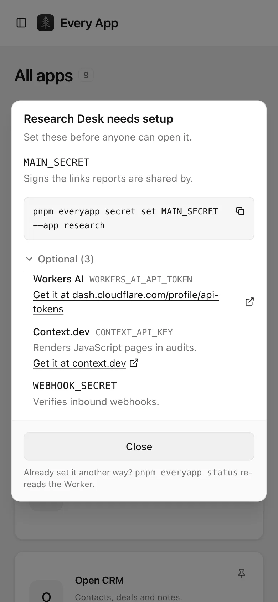
Readable at phone width; the command wraps at a space and the copy icon stays put top-right.
Nothing.
'Get it at dash.cloudflare.com/profile/api-tokens' wraps to two lines and its external-link icon floats at the right edge, centred between the lines, detached from the word it belongs to. The footer order flips (Close, then the note), so the note reads as an afterthought.
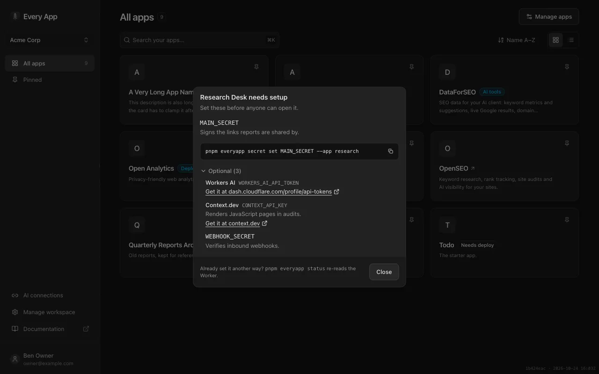
Dark keeps the structure: code block and dialog read as two surfaces, the left rule on Optional survives, links stay underlined.
Nothing.
The footer note is the lowest-contrast text in the dialog in dark, and it is the only line that says what to do if you already set the secret.
Members get a calm launcher that never explains why an app won't open
This is the product most people will ever see: a member signs in, lands on the launcher, opens an app, and occasionally checks AI connections. The owner's grid minus the admin controls is the right idea and the shell holds up in light, dark and on a phone. Look at the four inert cards on Morgan Member's launcher and the empty AI connections page: both are places where the gateway knows something the member needs and doesn't say it.
It is the owner's grid with the admin controls removed, so the member's first screen is the owner's screen with less. Openable cards are white, inert ones a shade greyer, and the ↗ marks the two that open.
'Deploying' and 'Disabled' are deploy states a member cannot act on; a disabled 'Quarterly Reports Archive' has no reason to be on a member's launcher at all.
Four of six cards are inert with no hint: 'Needs setup' reads as a to-do for the member, 'Deploying' like a status page, and nothing says who fixes it or when. 'Disabled' is plain text while the other two states are coloured chips.
Dense and scannable; 'Open app ↗' finally names the action, and six apps fit in a quarter of the screen.
Nothing.
The pin icon drifts left and right row to row because the status column has no fixed width. Grid shows only a tiny ↗ where list shows an 'Open app' button, so the affordance changes with the view.
Stacks cleanly, the pin is a 44px target, search comes first, and the drawer hides the org switcher and account where a phone wants them.
Each card spends roughly 250px on one or two lines of text; the padding is twice what the content needs.
The ↗ disappears on phone, so 'Open CRM' and 'OpenSEO' look identical to the inert cards except for a slightly greyer background. 'Quarterly Reports …' truncates to make room for 'Disabled' instead of wrapping.
Short, honest copy; 'AI apps you allow show up here' states the gateway's promise in the member's own words.
Nothing.
There is no way in: no MCP URL, no copy button, no docs link, so a member told to 'connect Claude' is stuck. The dashed border and inbox-tray icon appear nowhere else; the sidebar uses a link icon for this same page.
Shield, one sentence of reason, one way out, and the sidebar still there so the member is never stranded. It matches the sign-in page's quiet centred style.
Nothing.
'Only owners and admins can manage the workspace' while the switcher directly under it is labelled 'Switch organization' and its item 'Manage organizations' leads to a page titled 'Organizations'. Two words for one thing.
Two things, both findable, nothing to configure. Theme lives where people look for it.
Nothing to remove; the menu is already minimal.
'Sign out' is styled destructive (red, door icon) though it is routine; the icon-only theme control sits left in a 224px menu with dead space to its right and nothing reads System / Light / Dark.
Same card, type and spacing as the rest of the gateway.
The whole page, for a one-org member: nothing to click, the slug 'acme' is developer-facing, and 'Active' is the only value the chip will ever show.
The green 'Active' chip contradicts the admin Users table, where Active is plain text and only exceptional states get a chip. The menu item says 'Manage' and a member can manage nothing here.
Dark holds together: the chips keep their hue, the '6' count chip and ⌘K kbd read, the tree logo and avatar stay neutral grey.
Nothing.
Card descriptions are dark grey on near-black and the card borders nearly vanish. 'Disabled' is a grey pill here but reads as plain text in light, so one state looks different per theme.
The Apps table shows developer internals in rows and hides the setup admins need
Admin → Apps is where an owner or admin sees every app the organization deployed, who can open it, and what the gateway hands it. Look at two things: how much of each App cell is developer output ("api-token:0123456789abcdef", "(no usable scope sets)", "tools on /mcp as dataforseo_<tool>") rather than a decision aid, and how "Available to everyone" and the per-person grants describe the same app in two contradicting voices. The dialogs are well built; they just don't say the one thing each row implies.

The table answers who can open what at a glance: "Everyone" in green, "Selected people" in grey, a user count you can click; dates and the "···" menu line up with the Users tab.
The "Apps" subheading repeats the active tab and, unlike Users' "Invite user", holds no action; the "Deployed by", "Sends as · Receives", "Integrations" and "tools on /mcp as dataforseo_<tool>" lines belong behind the ⓘ.
"Access" here means a people count while "Access" on AI connections means "Read & write"; "AI tools" sits in the Status column as if it were a lifecycle state; "Deployed by api-token:0123456789abcdef" is a raw identifier in a people line.
Slug and hostname in mono, the capability sentence names access level and the manifest's reason in quotes, and the helper "Turning this off keeps the people who already have access." answers the obvious fear before it forms.
"Mail: sends as hi@example.com" is a read-only line with nowhere to go, and it drops the "Receives support@example.com" the row shows.
The dark-ink sentence "Slack lists no usable scope sets, so the gateway refuses its tokens: name one or more under scopes in its capabilities entry and deploy the app again." is developer copy wedged into an admin's rename dialog with no alert styling, so it reads as part of the description.
Identical layout to the other Edit dialogs; the reason-in-quotes pattern holds.
Nothing.
The row says Needs setup and this dialog says nothing about it: no missing secret, no blocked state, no link to the checklist, so the one app that needs an admin's attention looks exactly like one that doesn't.

The footer sentence is the best copy on the page: it tells you the result before you commit, and the "via Engineering" chip explains a grant you didn't make.
"Has access" / "No access" repeats the checkbox on every row, and the deactivated "Taylor Former" is in the list.
Behind the dialog the Research Desk row says "Everyone" while the dialog says 3 of 6 will have access, and nothing reconciles them; the list clips mid-row on Taylor with no scroll cue, and "Maximilian Alexander Bartholomew Fitzgerald-Mont…" truncates without a tooltip.
Consistent with the provider row: same order, same icons, same red.
Nothing.
No "Open app", "Usage" or "Finish setup": from the page that manages apps you cannot reach the app or its numbers, and the menu is the same on every row regardless of status.
Two sentences, the app named in the title, the destructive button labelled with the verb and tinted red, Cancel first; sized right for the decision.
Nothing.
"This will revoke access from 6 users" on an app the row marks Disabled makes the count feel wrong, and the copy never says the Worker on Cloudflare stays or that usage history survives (Admin → Usage later lists "Removed app dca40297-…").
The App column itself reads well: name, ⓘ, and "slug · hostname" wrap cleanly at a type size right for a phone.
The same metadata lines, now making every row 100px or taller.
Status shows as "Ac", "N", "A", "D" slivers; Available to, Access, Updated and the menu are off-canvas with no scroll hint, and the tab strip clips "Tokens" with no fade.
Contrast holds: labels, the mono hostname and the capability sentence all stay legible, and input borders remain visible against the panel.
Nothing.
"Save changes" is a flat mid-grey slab that reads as disabled next to the white switch thumb, the brightest element in the dialog; primary and disabled are indistinguishable in dark.
Inviting works; the Users page still warns, promotes silently and reorders itself
Admin → Users is where an owner brings people in and takes them out: invite, hand over the link (email is off by default), promote, reset a password, deactivate, delete. The link dialogs and the two confirms are the best copy in the admin area. Look at three things: the amber notice every new owner meets first and cannot act on, a role change that happens with nothing on screen, and the new invitation row that lands at the bottom of the list behind the dialog and jumps to the top on reload.

One table with four columns and nothing to configure: who, role, status, since when. Pending and Deactivated are the only chips, so the eye lands on the rows that need a decision; the amber notice says plainly how invitations travel when email is off.
The notice sits permanently above the table like a warning for a state that is the self-hosted default; a line under the heading, or a one-time dismiss, would do. The owner's row has no actions button and no word about why.
Rows with a name and an email are 53px, email-only rows 41px, so the table looks ragged; dates read 10/24/2026 while the invite-link dialog on the same tab says "Oct 27, 2026, 9:25 AM".
An admin gets the same page as the owner with only the row menus reduced; nothing is greyed out or hidden in a confusing way.
Nothing.
Two rows (Ben Owner, Alex Admin (you)) end in a blank cell with no explanation; an admin cannot tell that owners are off-limits by design rather than broken.
Identical to the admin's dialog; nothing differs by role, which is right.
Nothing.
Same gap as the admin's: no role explanation where the choice is made, and 'Invite' as the verb for producing a link.

The same shape for owner and admin; the copy button sits on the link block where the eye lands.
Nothing.
Two date formats on one screen: 'Oct 27, 2026, 9:25 AM' in the dialog, '10/24/2026' in the Created column behind it.
Four items with icons, and the separator splits safe from unsafe.
Nothing.
'Deactivate user' and 'Delete user' are visually one thing (same red, same group); 'user' appears in three items while the dialogs say 'them' and the page says Users.
'Deactivate Morgan Member?' plus 'Signs them out everywhere, blocks sign-in and revokes their tokens.' names the three consequences in one sentence; the best confirm in the admin area.
Nothing.
The destructive 'Deactivate' is a pale pink pill with red text, lighter than the solid dark 'Invite' and 'Done' buttons elsewhere; the list behind shows newperson3 at the bottom while the fresh load puts it on top.
The cell updates in place without a reload.
Nothing.
A one-click promotion to admin with no confirm and no visible feedback, while deactivation gets a dialog; src/routes/_app/admin/users.tsx:131 has toast.success(Role changed to ${input.role}) yet nothing is on screen, and that text would read lowercase 'admin'.
Same shape as the invite link, and 'Anyone with it can set the password, so share it privately.' is exactly the sentence this needs.
Nothing.
One menu click mints a live reset link with no confirm, where deactivating gets a dialog; the expiry line is the same tiny grey.
The notice keeps an amber tint with legible yellow text, and the Pending and Deactivated chips stay readable on the dark card.
Nothing.
The 'Invite user' button is a grey pill with barely more weight than the table header; in light it is the only black element on the page.
Heading, tab labels and the Invite button stay tappable; user cells truncate with ellipses instead of wrapping.
The notice takes three lines and more height than the heading and tab strip together.
A horizontally scrolling table with no cue hides Status, Created and every row action; an admin on a phone cannot see that the '…' exists.
Groups is the tidiest admin tab; its checklists hide what they've granted
Groups is where an owner turns "the gateway only gives apps what you allow" into a rule: put people in a group, check the apps the group may open. Look at three things: whether a new owner can find the way into a group at all (the "0 members" and "0 apps" cells are buttons that look like text), whether the checklist dialogs tell the truth at a glance (Engineering says "3 of 9 apps selected" while one check is visible), and whether the apps offered here carry the same state words as the launcher and Admin → Apps.

Same card, header style, column rhythm and "…" actions as Users and Apps; name plus muted description in one column reads fast.
The "Groups" eyebrow above the card repeats the active tab label 50px above it (Users and Apps do the same, so it is a shared habit, not a local one).
"0 members" and "3 apps" are ghost buttons that look like plain text (no underline, chevron or colour), so the main way into a group is invisible until hovered. Engineering's row is 12px shorter than its neighbours because it has no description, the same unevenness as Users.
Four parallel verb + object items with icons and the destructive one separated: the tidiest row menu in the admin area (Users mixes "Password reset link" with "Change role to admin").
"Manage members" and "Manage apps" duplicate the count buttons in the row; one of the two entrances should carry the affordance, not both quietly.
"Manage apps" here opens the group's app checklist, while the launcher's top-right "Manage apps" button opens Admin → Apps: one label, two destinations.
Two fields, example placeholders instead of helper text, the same 448px width and footer as Invite user; nothing to learn.
Nothing.
Nothing in the dialog itself; the gap is after it: a group is born "0 members · 0 apps" and neither the dialog nor the "Group created" toast hands you to Members or Apps.
"Everyone checked can open the apps granted to this group." is the clearest permission sentence in the admin area, and the "Search users..." field plus Select all / Clear make this hold up past six people (the lane note calling it unsearchable is wrong; the field is there).
The "You" chip: the Users tab prints "Ben Owner (you)" inline and muted, and a chip gives the owner's own row weight it doesn't need.
Taylor Former is checked with a red "Deactivated" chip and nothing says whether a deactivated person in a group can open anything; the chip is outlined here and solid on the Users tab.
The "Deploying" chip beside Open Analytics is the one place this dialog shows app state, and it uses the launcher's word.
Nothing.
The footer says three selected but only one check is visible: OpenSEO and Research Desk sit under the list cap with no scrollbar or fade, so the dialog appears to contradict itself.
Named title, one line, destructive button in red, same shape as Delete app. For an empty group the generic sentence is the whole truth; groups.tsx adds "Its N members lose the N apps it grants…" only when both counts are above zero, which this shot cannot show.
Nothing.
Nothing.
Same geometry as light; the focus ring on Name and the textarea border both survive dark.
Nothing.
"Create group" is a mid-grey button on a dark grey dialog and reads as secondary, while in light it is solid black; "New group" behind the scrim drops the same way.
The Group column with name and truncated description is readable and New group is reachable.
Nothing.
The Members column is cut mid-word ("Me", "0 r", "6 r") at the card edge with no scroll cue, and the tab strip clips "Toker"; Apps, Created and the "…" menu are unreachable without discovering a horizontal scroll, the same as Users and Apps on phone.
Usage proves the gateway meters apps; the cap it enforces is still mute
Admin → Usage is where an owner sees what every app spent in provider calls, tokens and dollars this month, and where the one hard control lives: a monthly cap the gateway enforces by refusing calls. Look at the Monthly cap column and its dialog first, because that is the product promise ("only what you allow") made visible, then at the money column and the raw ids, which are the two places the tables look unfinished.

The page frame matches Users and Apps exactly (h1 'Manage workspace', line tabs, a small section label with the control on the right), the cap column tells the whole story in one glance (red full bar, thin bars, 'Unlimited'), and the long app name truncates with an ellipsis rather than breaking the row.
'Usage' as a section label under a tab already called Usage is a doubled label; the sibling tabs have the same habit, so fix it across the admin or leave it.
The 'Removed app' row prints a raw 36-character UUID 'dca40297-4cae-5bb6-a2f1-db1bbef09426' as its slug line, '$0.4800' breaks the money column's precision, every non-zero failure count is red whether it is 12 of 1,244 or 4 of 20, and the build stamp overlaps the By member header.
The three cuts reconcile: 1,928 provider calls and $1.72 appear whichever way you slice it, 'Background — Calls the apps made on their own' explains machine usage in plain words, and the 'AI provider' / 'Capability' chips give the provider list a shape.
The id line under each provider ('workers-ai', 'openrouter', 'email') repeats the name in lowercase for everything but DataForSEO; it earns its place only when the id differs from the label.
DataForSEO wears a 'Capability' chip here but an 'AI tools' chip on Admin → Apps and the home grid, two words for one thing; the inline chips also make the Provider column ragged, and the build stamp sits over the last row's '$0.00'.
Same frame as the edit dialog, so setting and changing a cap feel like one action, and 'Remove cap' correctly disappears when there is nothing to remove.
Nothing.
The grey '5000' placeholder inside a number spinner reads as a filled value until you look twice, and the 'so far this month' hint, the single most useful number when choosing a cap (Open CRM made 20 calls), is omitted precisely in the dialog where you set one.

Title names the app, 'Remove cap' is set apart on the left as the destructive option, and the live count under the field is exactly the number you need to pick a new cap.
Nothing.
This is the one state where the gateway is actively refusing an app's calls, and the dialog is pixel-identical to the under-cap one: no 'Cap reached', no 'refusing since', no date the month resets. The only cue is the red '1,244 of 1,000' half-hidden behind the overlay.
The month control and refresh button fit the width, app names and slugs stay readable, and the phone header with sidebar toggle is consistent with the rest of the gateway.
Nothing.
The 996px table is clipped inside a 350px card with no scroll affordance: the header ends at 'Provider c', Agentic Inbox shows '1,2', and Failures, cost and the Edit / Set cap controls are unreachable; the tab strip also clips at 'Toker' with no fade or chevron.
This page is the proof of the promise; its Who cell needs room.
Admin → Activity is the receipt for "the gateway only gives apps what you allow": every tool call an AI client made, who made it, through which app, at what risk, and whether the gateway let it run. Look at the 8:26 AM row (delete_proje…, Destructive, Blocked, Not run) because that is the product in one line, then look at how much of the Who and Tool columns is swallowed by an ellipsis while the When column repeats the same date eleven times. The structure and the chip language are right; the layout starves the two columns that matter most and the phone view cannot show the Decision at all.

The table answers the product's question at a glance: who, through which client, hit which tool, at what risk, and whether the gateway let it through; the 8:26 AM row (delete_proje…, Destructive, Blocked, Not run, —) is the promise made visible, and "Arguments and results are never stored." is the right one-line privacy claim.
The year on every "Oct 24, 2026, 9:10 AM" cell: eleven repetitions of the same day take the width the Who and Tool columns are starving for, and line two of every Ben Owner row repeats the owner@example.com already shown in the sidebar footer.
The first two rows read "Ben O…" because the shrink-0 "Every App local test client" chip wins over the person's name; "Claude De…", "Codex CLI …", "claude-co…" and "delete_proje…" all truncate at the 192 / 167 px caps; the fixed build stamp overlaps the last row's Outcome and Duration cells; nothing on the page says why 8:26 AM was blocked.
Chip hues carry over cleanly (Allowed green, Blocked red, Write blue, Destructive red) and the red outcomes Tool error, Timed out and App error keep their contrast on the dark cells; the Activity tab underline is still visible.
The sidebar says Pinned twice (the "Pinned 1" filter link and the "Pinned apps" group naming the same OpenSEO); not this page's fault but it is in frame.
The grey client-kind chips ("Claude", "Token", "Session", "Access") turn into near-black pills whose border all but vanishes, so they read as stray words beside the name; the build stamp "1b424eac · 2026-10-24 16:03Z" still sits over the last visible row.
The filter selects and the range toggle wrap inside the card without breaking and stay tappable; the section title and hint survive intact.
The full "Oct 24, 2026, 9:10 AM" column takes roughly 40 percent of a 350 px card, which is what reduces the first two rows' name to "B…".
The active Activity tab is off-screen (the strip clips at "Toker"), so the page shows no selected tab; App, Tool, Decision, Outcome and Duration are off-screen with no scroll affordance, so on a phone the page cannot answer "allowed or blocked?" at all.
The hover is quiet and the row stays legible; keyword_overview · Read · Allowed · OK · 1.2 s reads as one complete sentence.
Nothing.
Hover reveals nothing in-page: "Claude De…" stays truncated and the full "Claude Desktop 1.4.0 (as the AI app named itself; not verified)" lives only in a native title (lane notes), while the Decision chip in the same row uses the in-page Tooltip component (DecisionCell in ToolCallsTable.tsx), so two chips on one row behave differently on hover.
The consent card sells the promise; its defaults and edges undercut it
This is where "the gateway only gives apps what you allow" gets tested: a person connects Claude Desktop or Cursor, chooses the organization, the apps and the access level, and later sees and revokes that grant under AI connections or Tokens. Look first at the consent card itself, which is the strongest screen in the gateway, then at what it preselects when Claude asks for read-only, and then at the three places the flow goes dark: the Allow button that sits disabled with no explanation, the empty AI connections page with nothing to do, and the white unbranded page a broken client lands on.
The thesis as one screen: who is asking (CD ⇄ tree), who you are ('Signed in as owner@example.com', 'Use another account'), and three plain choices, Organization, Apps, Access, closed by 'Destructive actions are never allowed.' It is the best screen in the gateway.
The 'Unverified' chip plus 'Named by the app itself.' plus the heading crowd the subtitle; one line would do. The Organization group lists both orgs with no hint why Acme Corp is first.
Claude asked for mcp:read and the form preselects 'Read & write' (ConsentForm.tsx hardcodes value="write" defaultChecked; the requested scope never reaches the form). 'Access will be sent to localhost.' is the redirect host and means nothing to a desktop user. Allow is grey with no cue why.
The armed state is unambiguous and matches the sign-in page's primary button.
Nothing.
Set beside consent-write-owner-light-1440 the only difference is the button fill; no text or progress cue says Allow was waiting for you, so a person who clicked straight away met a dead button with no explanation.
This is the promise made visible: the person picks exactly which apps the AI may reach, and an app with no tools is greyed with the reason in-line.
Nothing.
The card grows to about 905px so only the tops of Deny and Allow show at 1440×900; the 75-character test app name wraps to two lines and pushes everything down. Nothing is pre-checked and the disabled Allow gives no hint that at least one app is needed.
Card, signed-in panel and radios hold their contrast in dark; the structure reads identically to light.
Nothing.
The disabled 'Allow' is a mid-grey slab barely distinct from an enabled secondary on this dark card, and the 'Unverified' chip is a dim grey pill. Without the light version beside it you cannot tell Allow is disabled rather than dark-themed.
A clear headline instead of a stack trace or JSON.
Nothing.
Same unbranded server page as the bad-client shot (32rem column, 15vh top margin, white body), and 'client_id is required' is the library's message passed through describeAuthorizationFailure. The lane note calls this a StatusScreen; the capture matches errorPage() in authorize.ts, not the React ConsentError/StatusScreen in routes/oauth/consent.tsx, which is centred with a logo.
The row answers the four questions a person has about a grant: which organization, which apps, what access, since when. It is exactly what the consent page promised.
'sends to localhost' repeats the consent page's odd phrase; for a desktop client it is noise. Show the redirect host only when it is a real domain.
No heading, toolbar or help above a 1102px table holding one row; the /mcp URL a client needs appears nowhere on the page. Per the lane notes Activity formats dates as 'Oct 24, 2026, 9:10 AM' while this and Tokens use '10/24/2026'.

One honest sentence, and the dashed card matches the app's empty-state pattern elsewhere.
Nothing.
It is a dead end: no 'how to connect' link, no /mcp URL to paste into Claude or Cursor, no pointer to Tokens for API clients. A new member told 'connect Claude' lands here with nothing to do, and the 384px card floats in a 1000px blank.
The client name and its sub-line survive the squeeze.
Nothing.
The action a phone user came for, revoking a client, is off-screen with no horizontal scroll cue. This page needs a card-per-row layout under 640px, like the admin tables.
Monospace 'epat_d4e5…' prefixes, a Status column and Last used make this a real credential ledger; a person can match a token in Cursor to a row by its prefix.
The 'Personal access tokens' sub-heading restates the active 'Tokens' tab directly above it, the same tab/heading duplication as 'Users'/'Users' and 'Apps'/'Apps' in the reference shots.
Row heights are uneven: the first row's two-line 'OpenSEO / openseo' scope is visibly taller than the others. 'Active' is plain text while Revoked and Expired are chips, so the column mixes two treatments. Personal tokens live under 'Manage workspace', an admin area, though they belong to the person; a member would not look here.
The amber 'Save this token now. It will not be shown again.' is the right warning in the right place, each block has a copy button, and the new row is already behind the dialog so nothing feels pending.
The 'Authorization header' block duplicates the token; every client wants the bare value and nobody types the header. The lead 'Send it as a bearer token from MCP and HTTP API clients.' is protocol talk for someone making a Cursor token.
The token wraps mid-string over two lines, which reads as two values; the create dialog is 448px and this one 512px in the same flow.

The failure states hold their frame; the two leftover doors still lead nowhere.
This is the gateway off the happy path: a wrong URL, a network that drops while an admin tab loads or a dialog submits, the eight seconds before a table fills, and two routes that still exist without a way in (/install when browser installs are off, /pwa). Look at whether each failure keeps you oriented and tells you the next step, and decide whether the two doors open or get bricked up before Monday.
The frame holds (title, six tabs, heading, button) and the ErrorState card names what failed and offers one action; it cannot be read as an empty list.
Nothing.
A 76px alert above 550px of empty canvas looks abandoned rather than broken, and the dark 'New group' primary stays enabled although the next shot proves creating fails.
Same inline pattern as the group dialog, so both admin dialogs fail the same way; the email and role survive and 'Invite' is ready again.
Nothing.
'Failed to create invite' is system vocabulary (the button says 'Invite'), has no full stop, and in dark the red text sits on a dark-red tint at low contrast; two red alerts, page and dialog, now stack on one screen.
The headers are real and the skeleton reads as a table about to fill, with no spinner and no frame shift when rows arrive.
Eight placeholder rows for a table that will hold four (DataTable.tsx line 203 hardcodes length 8), plus a lone stub bar in the blank actions column.
The bars are nearly the card's colour so the skeleton barely registers, and 'New group' is enabled before the list exists.
One message, one exit, the same centred logo-title-button stack as sign-in, so it cannot be mistaken for a browser error page.
Nothing.
NotFound is the router's defaultNotFoundComponent (router.tsx) and renders outside the _app shell, so the owner loses the sidebar they were just using; nothing says which path was not found, and 'Page not found' is set smaller than the 'Sign in' heading on the auth pages.
The source URL carried over from the link and is shown, so the person knows what they were about to install.
The 'Workspace' input styled as editable with nothing to edit (InstallAppForm.tsx renders a readOnly Input when there is one workspace, lines 125-133).
The one sentence that matters is the quietest text on the card (muted grey) and sits above a dead primary; a page that has told you it cannot work should not look like a form.
Fits the phone width; the QR tile and URL chip stay legible.
Nothing.
A phone-sized screen is told to scan a QR with the phone it is holding. detectPlatform (utils/platform.ts) branches on navigator.userAgent only, so a real iPhone gets the step-by-step branch, but iPads in desktop mode and desktop-UA phone browsers get exactly this.
Ranked fixes: fourteen for the weekend, eleven for the week after.
Ordered by what a first-time owner or member meets, then by effort. S is copy or one component, M about a day, L more. "Held for Ben" marks sign-in and auth surfaces, which stay his to merge. Each fix also lives in TODO.md under "UI review (2026-10-25)" with its code pointers.
Ask for the organization name on the claim form
Held for Ben: After claiming, the sidebar's organization switcher reads 'Ben Owner', repeating the account block just under it, because the first organization is named after the person and renaming is switched off, so the name never changes. Add an optional Organization field to the claim form that defaults to the person's name when blank, keeping the 64-character cap and leaving the hosted path untouched. A rename in Manage workspace is the better medium-sized follow-up.
Setup dialog: name both email settings, explain next step, never split names
The Agentic Inbox setup dialog lists 'Email EMAIL_FROM' and its command sets EMAIL_FROM alone, but the gateway refuses to send without EMAIL_FROM_NAME, so an owner who follows it ends with a sender that shows set and does not work; make EMAIL_FROM_NAME a required setting (TODO 641's 'both names required' default) so the dialog and its command name both. The dialog's only path is copy then Close and nothing says what happens after, so add 'Run it in a terminal, then come back here: the app opens.' under the command and let the dialog close or read ready on its own once setup finishes. Keep the footer line about status re-reading the Worker (at most 'tells the Gateway'), and never say 'turns Active', since a ready app shows no chip. The command block splits 'SLACK_' / 'CLIENT_SECRET' across two lines at 512px and reads as four names (the phone breaks at a space only by chance), so wrap at spaces and break only a lone over-long token.
Admin → Apps: strip developer strings, rename Access, explain 'Available to everyone'
Rows on Admin → Apps carry 'Deployed by api-token:0123456789abcdef', ' · tools on /mcp as dataforseo_<tool>' and 'Integrations: Email · Slack (no usable scope sets)', so heights run 53-101px and the table reads as a log. For launch, say who deployed it in plain words ('Deployed with an API token' / 'with a deploy key', a person's email as is), delete the mail and integrations lines from the rows since Edit app shows both in full, add a read-only 'Deployed by' line there, and leave the 'tools on /mcp' line to the MCP apps call (TODO 591, 628). Research Desk reads 'Everyone' while its Manage access dialog says '3 of 6 users will have access (1 through groups)'; the flag is an auto-grant and the grants are what the gateway checks, so keep the count as the truth and fix the words instead. Rename the column 'Who can open' (ending the collision with AI connections' 'Access' column), make the switch description 'Grants every current member, and everyone who joins later. Turning it off keeps the people who already have access.', add one line to the access dialog when the flag is on ('Available to everyone: people who join later get access too. Unchecking someone here takes theirs away.'), and do not make the cell say 'Everyone' or let the flag bypass grants, since that is an auth-semantics change held for Ben.
Sign-in: Sign up only when open; behind Access one alert, no SSO
Held for Ben: Every self-hosted sign-in ends with 'Don't have an account? Sign up' though signing up answers 'Invitation required', so show that line only when sign-up is open (and not while still loading, so nothing flashes), keeping 'Forgot password?'. Behind Access the not-invited and mismatch states stack a blue and a red alert that say the same thing, so show the blue info alert only when no Access-caused error is on screen (a plain wrong-password error keeps it), add the 'Not you? Sign out of Access' link to both red alerts, and hide 'Continue with Company SSO' and its divider when Access has already named the person, since for them it loops to the same result. The bold address breaks as 'someone-/else@example.com', so keep it on one line (or break only at the @) and wrap it the same way inside the red alerts. One held PR for Ben like #461; it changes nothing the server accepts.
Give empty AI connections the way in; point Documentation at docs
A member told to connect Claude lands on the AI connections page reading 'No AI connections yet / Claude, ChatGPT and other AI apps you allow show up here.' with nothing to do. In that empty state add the gateway's own connection address with a copy button, one line naming Claude, ChatGPT and Claude Code, a link to the connect-AI docs, and a tokens line that fits the role: owners and admins see 'Manage workspace → Tokens', members see 'ask an owner or admin for a personal access token', since members cannot open the admin pages. Keep the dashed empty state, which is the Groups pattern. In the same PR point the sidebar's Documentation link at the docs instead of the everyapp.com home, since it is the only exit the phone empty state has today.
Look up the invitation before sign-in: name the organization, refuse dead links
Held for Ben: A real invitation link and a made-up token both render the same 'Sign in to accept / Use the email address that was invited.' card; the organization, the inviter and the invited address are never shown, and the 'Invitation link not valid' card appears only when the token is missing, so a person with a dead link signs in or creates an account before learning it. Look the invitation up by its link token before the sign-in step, treating unknown, used, cancelled and expired links identically and returning only the organization name and the invited address (masked or full as Ben decides), then show 'You're invited to Acme Corp' or the not-valid card. Rate-limit the lookup like password reset and add a row to the threat-model register. A new unauthenticated endpoint is Ben's call this morning rather than a blocker, since behind Access the invitation is accepted at the door and the sign-up path already refuses a dead token.
Users tab: newest first after an invite; email warning becomes a note
A fresh load of Admin → Users lists newest first, but the row a just-sent invitation adds lands at the bottom under the deactivated user (newperson3 in the invite-link shot) and jumps to the top on reload; sort newest-first from the start so the first invite a new owner sends stays where it appears. Email is off for every new install, so the first admin screen opens with an amber alert bar ('Email is not configured. Invitations and password resets give you a link to share instead.') that cannot be dismissed and links nowhere. Replace it with a hint under the 'Users' heading, Activity's pattern, reading 'Invitations and password resets are links you share. Set up email' with the link to the send-email docs; the way out is setting the EMAIL_FROM and EMAIL_FROM_NAME secrets, not the email command. UI-only, auto-mergeable, an agent's morning task.
Tokens copy: delete '(coming later)', one name for the action, one revoke
Held for Ben: The create-token dialog every Claude Code user opens on day one says 'claude.ai connectors need the OAuth connector (coming later).' though AI connections and the consent flow ship, so delete it or link to AI connections. The Tokens page button says 'Create access token' while the title and toasts say 'Personal access token'; use the Groups pattern (button and title 'New token', submit 'Create token') and rename the seed row rather than the 'Claude Code on MacBook' placeholder. In the same held PR unify revoke: 'Revoke connection' on AI connections (verb + noun like 'Revoke token'), the tokens' consequence line in the present tense connections uses ('Anything using it loses access on its next request.'), and an unplug icon instead of a trash can in the tokens table since revoke keeps the row. Keep the kebab menu and the soft destructive button, both gateway-wide patterns.
Stop promising email on a gateway that cannot send it
Held for Ben: The forgot-password page promises 'We'll email you a link to reset it.' and then shows 'Check your email' in a green success alert on a gateway with no sender. The Users tab already admits email is off, so tell this page the same thing and, when email is not configured, say 'This gateway doesn't send email. Ask an admin for a password reset link.' (the admin's menu item is literally 'Password reset link'), keeping the 'Forgot password?' link where it is. Make the reset-link-not-valid screen's 'Request a new reset link' say the same when email is off. A signed-out auth page, so held for Ben, but an hour of work with one test.
Keep the build stamp off the content
The fixed '1b424eac · 2026-10-24 16:03Z' build stamp prints over content on any page whose list reaches the bottom-right corner (the 'Agent tool calls' header on Usage, the Todo row's date on Admin → Apps, the Research Desk card at 1024), and a git sha over data reads as a debug overlay. The stamp already ignores clicks, cannot be selected and hides on phones, so the one-line fix is a background behind it. The fuller fix moves it under the account row in the sidebar and keeps the floating version only on pages without a sidebar, which also takes it off sign-in and the 404 shell. Do not hide it on everyapp.team or on hover; the threat model relies on matching a screen to a commit.
Put the product lockup on every signed-out page
Sign in, sign up, forgot password, the invitation card and the 404 show a bare grey tree over the title, while the signed-in shell shows the dark tile and the 'Every App' wordmark, so a member arriving from an invite link finds no name on the door. Show the same mark and wordmark, without the home link, in the signed-out card and in the status screen, which also covers verify-email, reset-password and the consumed setup link. The consent page already names the product. The organization name on the door belongs to the invitation lookup, not to this change.
Clear cached data on sign-out and when switching organizations
One second after choosing Northwind Traders the sidebar reads 'Northwind Traders / All apps 1'. The Usage table, though, still lists Acme Corp's apps from the cache the browser kept. Sign-out is the launch reason: signing out only ends the session, so on a shared browser the next person who signs in sees a flash of the previous person's admin rows, a path that exists on self-host on Monday. Forget everything cached except the sign-in state when an organization switch succeeds and on sign-out, before refetching; the pages already show skeletons while data is absent, so no 'Switching…' screen is needed.
Tidy the organization switcher and its page
'Manage organizations' in the switcher opens a page that manages nothing: for the one-organization case nearly every owner and member has, it is a single row with a slug and a green 'Active' chip. Hide the item when there is exactly one organization (not zero: people with none are sent there for 'No organizations yet'), relabel it 'All organizations', drop the slug for every role and make the badge plain text 'Current', since 'Active' means an app's status elsewhere. Keep 'Manage workspace' and the page; the one-word rename is the separate decision below.
Groups: count cells that invite, a hand-off after Create group, overflow cues
After 'Create group' the new row lands as '0 members · 0 apps' in ghost buttons that look like labels, the same pattern the Apps table's 'N users' cell uses; decide it once for both (muted colour plus hover underline, no verb at zero) rather than restyling Groups alone. Give the 'Group created' toast an 'Add members' action, which is gentler than always opening the dialog in a one-person org. 'Apps for Engineering' shows one check while the footer says '3 of 9 apps selected' because five rows fill the box exactly, so no sixth row peeks and the list reads complete; add a real overflow cue (a gradient or 'N more below' driven by the actual scroll, never a static mask) in the checklist and in the identical box in the app access dialog, with selected items sorted first as the secondary step. Pure client, mergeable under the green rule.
Pick 'workspace' for person-facing copy
Most of the product says workspace (the sidebar, the admin gate, the install form, the user docs and the CLI's 'Manage workspace → Users'), but about twelve strings in ten files still say organization: the switcher's screen-reader labels, 'Manage organizations', the organizations page title and empty copy, sign-up, groups, the app access dialog, the Apps table, Usage, the token dialog and the 'Organization' column on AI connections. Standardize person-facing copy on 'workspace' (plus the one test that quotes it) and leave ids, routes, the quoted API messages and the agent docs' technical 'organization' alone. Fix the drift in the agent MCP doc in the same pass; it still quotes the gate's old sentence. Ben's call: if he picks 'workspace', nothing else changes.
One status vocabulary: 'AI tools' is a kind, idle states one grey
'AI tools' and 'Deploying' draw the same info-blue chip on the launcher and in the Admin → Apps Status column though one is a kind of app and one is transient, and Disabled (filled) and Needs deploy (outline) are two greys for two idle states. Show a ready provider app as Active (plain text on Admin → Apps, matching groups), carry the kind as a neutral chip beside the name on the card and in the apps table's name cell (never a new row; cards share one height), give Needs deploy the secondary grey, and update the two agent-doc lines that list 'AI tools' as a Status word. The group's apps dialog only chips apps that are not active, so Agentic Inbox loses 'Needs setup' there and 'Deploying' turns warning-yellow; feed that dialog the same app details the launcher gets so it shows the same status. This overrules the MCP apps thread's recorded chip default, so decide it together with the inert provider card item.
Dark mode: real weight for the primary button, visible outline chips
In dark mode every default button ('Sign in', 'Save changes', 'Manage apps', 'Create owner account', 'Allow') is a mid-grey metallic slab, so in Edit app the switch's light ON track outcompetes 'Save changes' and the hierarchy sags toward the outlined buttons; the generic half-opacity disabled state leaves a disabled button nearly the same grey (consent's disabled Allow is 1.57:1 against the enabled one). Point the dark primary button at the existing primary colours (light fill, dark text, what the switch and checkbox already use) and add a dark-specific disabled look. On Activity in dark the outline badge ('Claude', 'Cursor', 'Token', 'Session', 'Access') loses its edge and reads as stray text beside the name; give outline badges a visible border in dark, not by changing the global border colour and not by switching them to secondary, since outline marks provenance and secondary marks risk.
Launcher: one open cue everywhere, one Pinned surface, counts that agree
The app card shows a tiny ↗ beside the name in grid, an 'Open app ↗' label styled as a button in list, and nothing on phones but a background tint that 'Needs setup' cards share; in list the pin drifts up to 25px between rows because pin and status share one column, and at 390 a chip beside a one-line name truncates 'Quarterly Reports …' with no title. Keep the bare arrow everywhere (dropping the list label also clears the mixed action/status column), give the status a fixed minimum width on desktop (in the skeleton too), and let the name row wrap on phones so the chip drops under a long name inside the 128px card. A pinned app then shows in the card, the sidebar's 'Pinned apps' list and the pinned filter page: delete the filter page and its nav item (60-80 lines of deletion), keeping the sidebar list because it opens an app in one click from any page. Searching 'zzzz' turns the heading into 'All apps 0' while the sidebar says 9, and the sidebar prints 'All apps 0' on admin pages before the launcher has loaded: keep the heading at the organization total (or hide the badge until the count is known), let the sidebar show a count only once the data is actually ready, and leave sort and layout live over an empty result as the admin tables do.
Usage: one money precision, this month's count, a summary line, short ids
The Usage cost column prints '$0.4800' for DataForSEO beside '$1.24' and '$0.00' (By provider shows the same money as '$1.72'): show two decimals, '<$0.01' for non-zero sub-cent values, and the exact amount on hover. The monthly cap dialog shows 'N so far this month.' only when a cap already exists, so the Open CRM dialog hides the 20 calls that would guide the choice: always show the count and keep the '5000' placeholder (house style). Add one plain line under the month select ('1,928 provider calls · 28 failed · $1.72 in October 2026'), summed from the per-app rows rather than tiles, and where 'Former member' prints the user id and 'Removed app' a UUID, show the first 8 characters in mono with the full id on hover, with the server returning the slug as the end state. Cost comes only from DataForSEO and a fresh workspace's Usage is empty, so this is a post-launch polish batch, not Sunday work.
Activity: person over client chip, blocked reason in row, reason keys match
In the Activity Who cell the client badge never shrinks and the name truncates, so the OAuth client name 'Every App local test client' reduces the subject to 'Ben O…' and to 'B…' on a phone, and the row names the client three ways (chip 'Claude', line two 'Claude De…', a native tooltip). Cap the chip's width, give the name a hover title, put the full client string on its own line while keeping the email, lift the 192px Who cap at 1440, use the same tooltip the Decision cell already has instead of two native titles, and drop ', 2026' in the current year from the date so Tool gains the ~15px that lets 'delete_project' fit. Blocked rows read 'Blocked / Not run / —' with the reason only on hover, and the Oct 23 list_contacts row (a read-only connection, the real 'only what you allow' proof) has no visible hint at all: add a short Outcome suffix ('Not run · read-only connection' / '· destructive tool' / '· no such tool' / '· workspace blocked'), re-checked at 1280. The reason labels are keyed to the seed's reason codes while a live gateway emits different ones, so in production the hover shows humanized codes instead of sentences; fix the keys and the seed, a two-line change safe before launch.
Admin tables: cards on phones, tab-strip scroll cue, 'Password only' marker
At 390 the Groups table is 633px wide in a 348px card and the Apps table's Status column shows 'Ac', 'N', 'A', 'D' with Available to, Access, Updated and the '…' menu off-canvas; both scroll sideways but nothing says so, and the admin tab strip cuts 'Toker' at rest. Do the phone layout once in the shared data table (the column definitions already carry header labels) so Users, Groups, Apps, Tokens, Usage, Activity and AI connections all reflow into a card per row; the small stopgap is a right-edge fade on the table plus actions pinned to the right. On the tab strip, scroll the active tab into view on route change and add an edge fade. On Users, when the Access provider is configured and passwords are still on, mark active rows with no Access account 'Password only' and add a count line in the CLI's words: '3 people haven't connected Company SSO yet; turning passwords off would lock them out.'
Red only for permanent loss: neutral Sign out, Delete alone, labeled toggle
The account menu shows 'Sign out' in destructive red over a three-icon theme toggle (monitor, sun, moon) with no visible labels, left-aligned in the narrow menu. The Users row menu puts 'Deactivate user' (reversible; the deactivated row offers Reactivate) and 'Delete user' (permanent) in one red group. Make Sign out neutral, show labels on the theme toggle (check the fit; full width is the fallback), and put Delete user alone under its own separator, with Deactivate's colour a secondary call since its confirm does say 'Signs them out everywhere'. Keep verb + noun labels and both password-reset variants (if 'Password reset link' is renamed, the users page and the gateway setup skill name it too), and fix the same red Sign out and unlabeled toggle in OpenSEO's sidebar or the two shells drift.
Signed-out dead ends: one shape, one 'link not valid', reset checked early
Sign-up, the consumed setup link, the invitation's not-valid and accepted states and verify-email's verified state each wrap one dark button in an otherwise empty white card; swap them to the uncarded status screen (logo, small size, already the shape on consent and the 404) and rename the three 'Back to sign in' buttons to 'Sign in', since 'back' has no referent for someone arriving from a link. The dead-link cards say it four times in three wordings ('Reset link not valid / Ask for a new one.', 'Link not valid / That link expired or was replaced. Ask for a new one.', the invitation's card twice); use one 'link not valid' pattern with '<Kind> link not valid', the reason ('That link expired or was replaced.'; for invitations 'expired or was already used') and one recovery control, cutting 'Ask for a new one.' only where a button or form does the asking (the invitation's 'Ask the person who invited you for a new one.' is the recovery). The reset-password page with a bad token shows the full form and learns the link is dead on submit; check the token when the page opens without consuming it, keep the submit-time failure for the race, and rate-limit the check like the reset request. Only people clicking stale links see these pages, so it waits.
Edge pages: branded OAuth error, Allow on screen, installs-off screen, shell 404
The OAuth authorize page without a client id returns a white, left-aligned, logo-less page reading 'Can't connect this app / client_id is required'; give it one branded template (logo, title, red alert, dark-mode aware) and plain sentences that end 'start connecting again from your AI app'. On the consent form, choosing 'Only these apps' pushes Deny and Allow below the fold; give the app checklist the same capped scrolling box the admin checklists use, truncate long labels with a hover title, and fold the disabled Allow's missing cue into the '0 of 6 apps selected' count line. When browser installs are off, the install page still renders Workspace, a disabled URL field and a grey Install under 'Deploy with the everyapp CLI instead.'; show instead a card saying 'Browser installs are off on this gateway.' with the CLI install command and a Back button, and in the live form show the workspace as a plain line ('Installs into Acme Corp') rather than dropping it, since the runbook makes install an approval page. The 404 loses the sidebar because the signed-in shell never catches an unmatched path; add a catch-all inside the shell showing the admin gate's empty state plus 'Go home' (it also catches a mistyped admin address), keep the root fallback, and since nobody reaches install on Monday because no app publishes a release yet, all four wait.
Dialog polish: Delete app's consequences, failure voice, reset warning, focus, docs link
The Delete app dialog says 'This will revoke access from 6 users. This action cannot be undone.' even for a Disabled app; say what happens instead, 'Takes <name> off this gateway: its 6 people lose access and their tokens for it stop working. Its Worker and data stay on Cloudflare (pnpm everyapp delete <slug> --purge removes them).', noting its usage stays on Admin → Usage as '<name>, deleted' (a UI delete keeps the name; 'Removed app <id>' is the seed's). 'Failed to create group' / 'Failed to create invite' should match the page's 'Couldn't load groups.' voice, so change the fallbacks, toasts and 'Failed to load users.' to 'Couldn't create the group.' / 'Couldn't create the invitation.' with no second sentence (the submit button is the retry), leaving the token dialog to the held Tokens PR. The reset-link dialog's 'Anyone with it can set the password, so share it privately.' is tiny muted text while the token reveal gives its claim a warning alert, so move that sentence into the description or the same alert, and show dates as 'Oct 24, 2026' instead of '10/24/2026' like the dialogs do. On the setup-link landings the first tabbable is the 'Get it at …' vendor link, so the browser's blue focus ring sits on a third-party link before anything else (start focus on the dialog body, give the link a proper focus ring, keep the icon after the last word on phones), and under 640px the onboarding banner hides the docs paragraph with the commands, so keep 'Docs: Start from template.' visible and make only the 'Refresh this page' sentence desktop-only.